激发态动力学（Excited State Dynamics）¶
ORCA 现在也可以借助全新的 ORCA_ESD 模块计算涉及激发态的动力学性质，
例如吸收光谱、荧光与磷光速率及光谱，以及共振拉曼光谱。
我们通过解析求解量子电动力学中类费米黄金规则（Fermi's Golden Rule）的方程
（参见 spectroscopyproperties.esd 一节）来实现这一点，
对动力学过程采用路径积分（path integral）方法，如我们最近的论文
de_souza_fluor_2018、de_souza_phosp_2019 所述。这些速率的计算
依赖于核简正模式的谐近似（harmonic approximation）。只要该近似成立，
计算结果就与实验数据高度吻合。
该理论能完成 ORCA_ASA 的大部分功能，甚至更多，例如在禁阻跃迁中
包含振动电子耦合（vibronic coupling，即所谓的赫茨伯格-泰勒效应
（Herzberg-Teller effect, HT）），考虑不同态之间模式的 Duschinsky 旋转
（Duschinsky rotation），用不同的坐标系求解方程等等。
还有七种新方法可以在不一定优化激发态几何结构的前提下获得
激发态几何结构与 Hessian。可用的关键词和选项很多，
但大多数默认设置就已经能给出很好的结果。
下面进入具体算例，先从吸收光谱开始。
完整的关键词列表与细节请参见
spectroscopyproperties.esd 一节。
吸收光谱（Absorption Spectrum）¶
理想模型：绝热 Hessian（The ideal model, Adiabatic Hessian (AH)）¶
要预测吸收或发射速率（包括全部振动电子跃迁）， 理想情况下需要基态（GS）与激发态（ES）的几何结构 和 Hessian。例如，预测苯的吸收光谱时——苯在 220 nm 以上有一个谱带， 对应于向 S1 态的对称性禁阻激发——过程就很直接。 基态信息可以通过（structurereactivity.optimization 一节）获得：
而 S1 激发态则通过（tddft.geometry 一节）获得：
这里假定使用 DFT/TD-DFT，但其他方法也可以使用 （见 esd.tips）。 两个 Hessian 都准备好后，就可以如下调用 ESD 模块：
!B3LYP DEF2-SVP TIGHTSCF ESD(ABS)
%TDDFT
NROOTS 5
IROOT 1
END
%ESD
GSHESSIAN "BEN.hess"
ESHESSIAN "BEN_S1.hess"
DOHT TRUE
END
* XYZFILE 0 1 BEN.xyz
注意
调用 ESD 模块时，输入中的几何结构必须与 GS Hessian 中的几何结构一致。 你可以在几何优化后从 .xyz 文件中获得它，或者直接 从 .hess 文件中复制（若是从 .hess 文件中获得，请记住在输入中使用 BOHRS 以修正单位）。
这里必须给出两个 Hessian 的文件名，并把 DOHT 设为 TRUE，因为 苯的第一个跃迁是对称性禁阻的，振子强度（oscillator strength）仅为 2e-6。 因此全部强度都来自振动电子耦合（HT 效应） de_souza_fluor_2018。对于跃迁强度很大的分子， 该参数通常可以保持 FALSE（默认值）。 程序会打印一些计算细节，包括 HT 分量的跃迁偶极（transition dipole） 导数计算，光谱则保存为 BASENAME.spectrum。
Energy TotalSpectrum IntensityFC IntensityHT
10807.078728 2.545915e-02 2.067393e-07 2.545894e-02
10828.022679 2.550974e-02 2.071508e-07 2.550954e-02
10848.966630 2.556034e-02 2.075624e-07 2.556013e-02
...
第一列是总光谱，其中弗兰克-康登（Franck-Condon, FC）部分与 赫茨伯格-泰勒（HT）部分的贡献也分别给出。 可以看到，本例中 FC 强度不到 HT 强度的 1%， 突显了包含 HT 效应的重要性。 需要指出的是，理论上吸光度强度值 对应于实验上的 \(\varepsilon\)（单位 L mol cm\(^{-1}\)）， 并且依赖于谱线线型（lineshape）。TotalSpectrum 一列 可以用任意软件绘制，得到名为 Full AH 谱（图中蓝色）的谱图， 见下图 fig:esd_ben_abs。
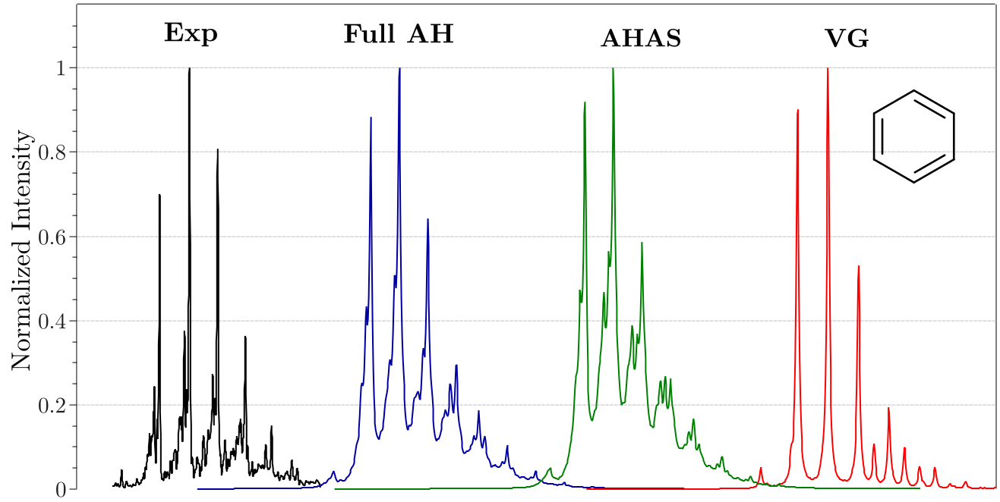
苯的实验吸收光谱（左侧黑色），以及 使用 ORCA_ESD 在不同势能面近似下做出的预测。
即使完全使用默认设置，所得谱图在 298 K 下也与实验结果非常接近， 并且还可以通过调节线型等参数进一步改进， 详见 esd.fluorescence 一节与 spectroscopyproperties.esd 一节。
注意
-
ORCA_ESD 中的路径积分方法比更传统的方法快得多——后者需要 逐个计算所有强度不可忽略的振动电子跃迁 santoro2007jcp。对大体系尤其如此： 明亮振动电子跃迁的数目可能呈指数增长，而我们方法的标度 仍然是多项式的（在有利情况下实际上接近线性标度 de_souza_fluor_2018）。代价是人们无法再从谱图上 直接读出振动电子态的组成，换言之，不做进一步计算 就无法对谱峰进行指认。不过，可以通过删去若干模式后 重复 ESD 计算、观察该谱峰是否依然存在，来判断 某个振动模式是否对某个谱峰有贡献。 这可以方便地用 MODELIST 或 SINGLEMODE 关键词完成。 更多信息见 spectroscopyproperties.esd 一节。
-
Huang-Rhys 因子是定性和定量分析各振动模式对 振动分辨光谱（以及后面将讨论的跃迁速率常数）贡献的 重要工具。将 %ESD 模块中的 PRINTLEVEL 设为 3 或更高 即可打印它们。
当然，由于根翻转（root flipping），并不总能获得激发态（ES） 几何结构，或者对较大的体系而言代价过高。 因此，人们发展了一些对激发态势能面 （Potential Energy Surface, PES）的近似。
最简模型：垂直梯度（The simplest model, Vertical Gradient (VG)）¶
最小近似称为垂直梯度（Vertical Gradient, VG），它假设 激发态（ES）Hessian 等于基态（GS）Hessian，并利用 ES 梯度和该 Hessian 通过某一步外推 ES 几何结构（拟牛顿（Quasi-Newton）或增广 Hessian （Augmented Hessian），此处后者为默认）。 此外，在这种情况下还采用最简单的位移谐振子 （Displaced Oscillator, DO）模型，以保证计算速度 de_souza_fluor_2018。 要使用这一近似层级，只需给出如下输入：
Energy TotalSpectrum IntensityFC IntensityHT
10807.078728 2.545915e-02 2.067393e-07 2.545894e-02
10828.022679 2.550974e-02 2.071508e-07 2.550954e-02
10848.966630 2.556034e-02 2.075624e-07 2.556013e-02
...
注：若未给出 GSHESSIAN，程序会自动寻找 BASENAME.hess 文件。
在 ORCA 中选择一种计算激发态信息的方法至关重要。 这里我们使用 TD(A)-DFT 并以 IROOT 1 计算第一激发态的性质。 TD(A)-DFT 是目前唯一为激发态提供解析梯度的方法； 选择任何其他方法都会自动强制使用 NUMGRAD。
注意
请注意，某些方法（如 STEOM-DLPNO-CCSD）计算数值梯度 会耗费大量时间。在这种情况下，我们建议使用 DFT/TD-DFT 的 Hessian，而把更高水平的方法仅用于单点计算。
如果一切设置正确，在常规单点计算之后， ORCA 中的 ESD 模块就会启动。它会获取激发态（ES） 几何结构、计算导数并预测光谱。 所得归一化谱图见 fig:esd_ben_abs 中的红线。 由于模型简单，谱图也相应简化。 虽然对较大的分子而言这种简化影响不大，但它 提示了采用中间模型可能带来的好处。
更优模型：步后绝热 Hessian（A better model, Adiabatic Hessian After a Step (AHAS)）¶
在完整的几何优化与用同一 Hessian 走简单一步之间， 一个合理的折中是：先走一步，然后在该几何结构处重新计算 ES Hessian。这一方法在此称为步后绝热 Hessian （Adiabatic Hessian After Step, AHAS）。在我们的测试中， 可以用如下输入调用它：
!B3LYP DEF2-SVP TIGHTSCF ESD(ABS)
%TDDFT
NROOTS 5
IROOT 1
END
%ESD
GSHESSIAN "BEN.hess"
DOHT TRUE
HESSFLAG VG #DEFAULT
END
* XYZFILE 0 1 BEN.xyz
所得谱图对应 fig:esd_ben_abs 中的绿线。 如图所示，它与做了完整几何优化的 AH 谱非常相似。 尽管它没有被设为默认方法，但根据我们的经验强烈推荐它 de_souza_fluor_2018。 该方法的另一个优点是：跃迁偶极的导数是同时在 ES 结构上 沿笛卡尔位移、用数值 Hessian 计算的。 随后这些模式可以被直接转换。
注：我们公式中使用的跃迁偶极总是最终态（FINAL state）几何结构处的跃迁偶极。 对吸收而言即 ES，因此在 AHAS 中导数是对此几何结构计算的。 对荧光而言，默认行为是在 GS 几何结构上重新计算导数。 另外，也可以通过设置 CONVDER TRUE 直接从 ES 转换到 GS 以节省时间 （尽管这是一种近似）。更多细节参见 spectroscopyproperties.esd 一节。
其他势能面选项（Other PES options）¶
还有一些可以用 HESSFLAG 设置的其他选项。 例如，可以先在 GS 几何结构上计算垂直 ES Hessian 再走一步， 这就是垂直 Hessian（HESSFLAG VH）方法。 该方法的优点是几何步长预期更好，因为它不假设 初始 ES Hessian 等于 GS Hessian。 然而，在该 VH 上很可能遇到负频率， 因为你并不处在 ES 极小点。默认情况下，ORCA 会把负频率变为正频率，如果有低于 -300 cm\(^{-1}\) 的 则发出警告。 也可以通过在 %ESD 下设置 IFREQFLAG 为 REMOVE 把它们 完全删除（同时删除 GS 中对应的频率），或者把 IFREQFLAG 设为 LEAVE 保留其负值。 但要注意，奇数个负频率可能会 破坏关联函数（correlation function）的计算，请务必检查。
如果激发态是局域的，而你不想重新计算整个 Hessian， 可以选择混合 Hessian（Hybrid Hessian, HH）方法。 该方法只对 %FREQ 中 HYBRID_HESS 所列的特定原子 重新计算 ES Hessian （structurereactivity.frequencies）。 HH 方法以 GS Hessian 为基础，但在指定原子处对它进行调整。 这一计算可以在几何步之前或之后进行，对应两个 变体：步前混合 Hessian（HESSFLAG HHBS） 和步后混合 Hessian（HESSFLAG HHAS）。 使用这两个选项时，导数会按需要在各模式上重新计算。
另一种方法是把 ES Hessian 与 GS Hessian 进行比较， 只重新计算那些不同的频率。其做法是：基于 GS Hessian 施加 一个位移，并评估由此产生的能量变化。 如果预测的模式与实际模式相符，预测就应当是准确的。 然而，如果差异超过给定阈值，就计算梯度 并相应地重新计算该模式的频率。 最终的 ES Hessian 由更新频率（Updated Frequencies, UF） 和原始 GS Hessian 导出。
该方法的优点是把标准 ES Hessian 中典型的大量 ES 梯度计算 降到最低，从而加快整个过程。默认情况下， 系统检查约 20% 的频率误差。 可以用 UPDATEFREQERR 标志调整该阈值；例如， 在 %ESD 下设置 UPDATEFREQERR 为 0.5 可允许 50% 的较大误差容忍度。 此外，还可以采用步前更新频率（HESSFLAG UFBS） 或步后更新频率（UFAS）方法。 跃迁偶极导数在更新过程中同时计算。
注：所有这些选项同样适用于荧光和共振拉曼。
Duschinsky 旋转（Duschinsky rotations）¶
ES 模式有时可以表示为 GS 模式的线性组合 （见 absorption.theory 一节）， 这一现象在文献中称为 Duschinsky 旋转 duschisnky_notitle_1937。 在我们 ORCA_ESD 的公式中可以考虑这一效应， 它反映了对真实情况的更好近似， 不过计算代价更高。
可以通过设置 USEJ TRUE 启用该特性；否则旋转矩阵 J 默认为单位阵。例如对苯而言， 虽然效应可能不太显著，但引入旋转后 谱峰比与实验数据的吻合有明显改善。 在其他体系中探索这一选项可能会发现更显著的影响。
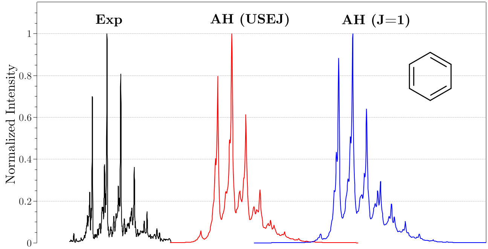
苯的实验吸收光谱（左侧黑色）以及 Duschinsky 旋转对谱图的影响。
温度效应（Temperature effects）¶
在我们的模型中，温度导致的玻尔兹曼（Boltzmann）分布效应 被精确地考虑在内 de_souza_fluor_2018。默认温度 设为 298.15 K，但可以通过调整 %ESD 下的 TEMP 参数 指定任意其他温度。不过要注意，当温度接近 0 K 时 可能出现数值问题。例如， 如果你在 5 K 下建模谱图遇到困难，或者想预测 超声射流冷却（jet-cooled）谱图，把 TEMP 设为 0 将启用一组 专门为 T=0 K 条件定制的方程。
从 fig:esd_ben_abs_temp 可以看出，在 0 K 时没有热带（hot bands） 且谱峰更少，而在 600 K 时由于 GS 上的布居分布， 可能的跃迁要多得多。
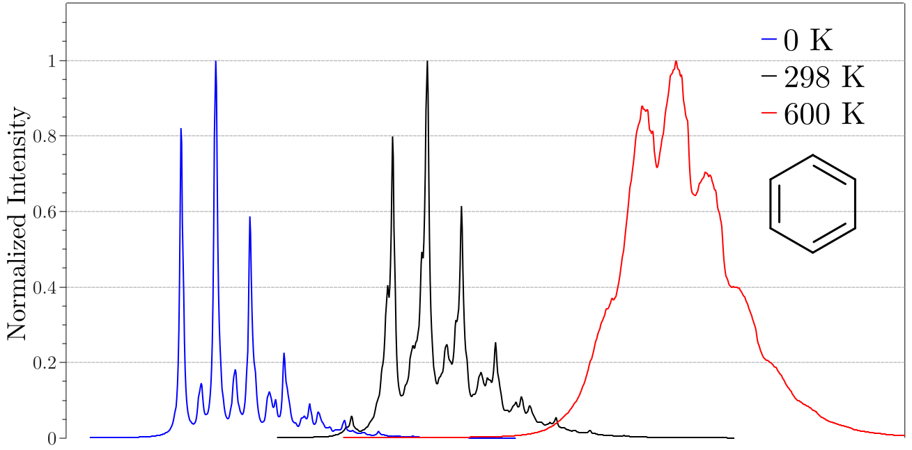
不同温度下苯的预测吸收光谱。
多态光谱（Multistate Spectrum）¶
如果你想预测包含许多不同态的光谱， 就应该在所有模块中忽略 IROOT 标志，转而使用 %ESD 下的 STATES 标志。例如，要预测芘（pyrene）气相 吸收光谱并考虑前二十个态，应这样指定：
!B3LYP DEF2-SVP TIGHTSCF ESD(ABS)
%TDDFT
NROOTS 5
IROOT 1
END
%ESD
GSHESSIAN "BEN.hess"
DOHT TRUE
HESSFLAG AHAS
END
* XYZFILE 0 1 BEN.xyz
该输入将给出 fig:esd_pyr 所示的谱图。 在这种情况下，每个态的单独谱图将分别保存为 BASENAME.spectrum.root1、BASENAME.spectrum.root2 等， 而所有单独谱图之和的总谱将保存为 BASENAME.spectrum。
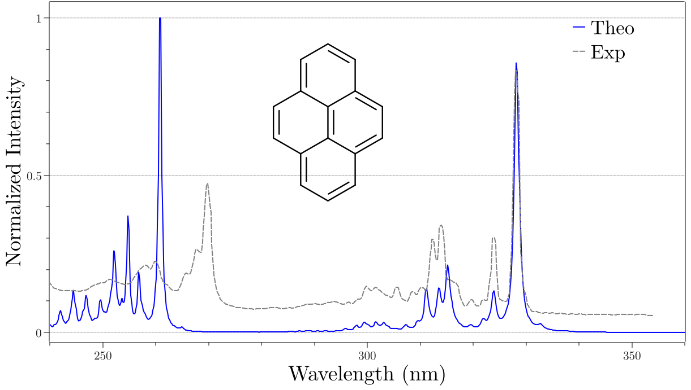
芘在气相中的预测吸收光谱（蓝色实线）与 298 K 下实验结果（灰色虚线）的对比。
注：UNIT 标志可用于控制 X 轴的输出单位。 其取值可以是 CM-1、NM 或 EV，它只影响输出， 输入应始终以 cm\(^{-1}\) 为单位。
荧光速率与光谱（Fluorescence Rates and Spectrum）¶
一般特性（General Aspects）¶
荧光速率与光谱的预测可以按照与上述吸收类似的方式进行， 即在主输入行上使用 ESD(FLUOR)。 可以通过设置相应的 HESSFLAG 选择前面描述的任何 势能面（PES）获取方法。主要区别在于跃迁 偶极必须对应于基态（GS）的几何结构， 其余方面则基本不变。
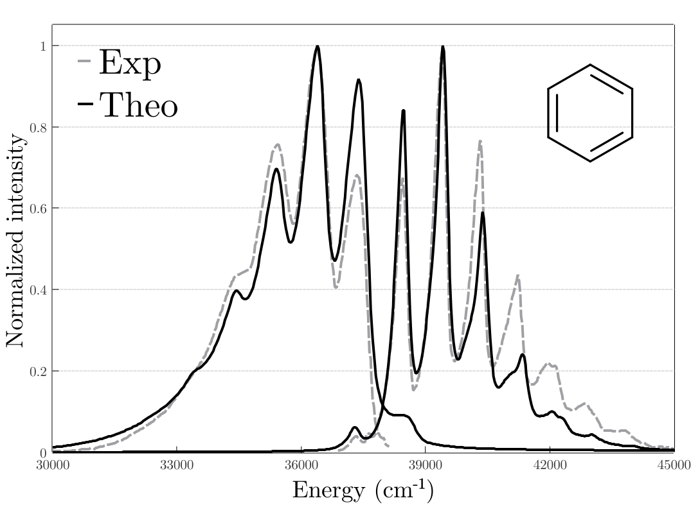
298.15 K 下正己烷中苯的预测吸收（右）与发射（左）光谱。
如 fig:esd_ben_full 所示，荧光光谱也 与实验数据高度吻合 de_souza_fluor_2018。 fig:esd_ben_full 中吸收光谱与之前谱图的差异 是因为实验是在溶剂环境中进行的。 因此我们调整了线宽以与实验数据对齐。
注：实验线型随测量装置而变化是很常见的， 这可以用 LINEW 标志（单位 cm\(^{-1}\)）调节。由 LINES 标志控制的 线型函数有四个选项： DELTA（狄拉克 δ 函数）、LORENTZ（默认）、GAUSS（高斯函数） 和 VOIGT（沃伊特线型，即高斯函数与洛伦兹函数的乘积）。
注 2：DELE 和 TDIP 关键词可用于输入在更高理论水平上计算的 绝热（不是垂直！）激发能与跃迁偶极矩。 这样就可以在低理论水平上计算代价高昂的 Hessian（尤其是激发态 Hessian）而不损失精度。更多细节见 absorption.custom 一节。
如果需要分别控制高斯（GAUSS）与洛伦兹（LORENTZ）线型， 可以对洛伦兹设置 LINEW，对高斯设置 INLINEW （其中 "I" 代表非均匀线宽（Inhomogeneous Line Width））。
!B3LYP DEF2-TZVP(-F) TIGHTSCF ESD(ABS)
%TDDFT
NROOTS 20
END
%ESD
GSHESSIAN "PYR.hess"
ESHESSIAN "PYR_S1.hess"
DOHT TRUE
STATES 1,2,3,4,5,6,7,8,9,10,11,12,13,14,15,16,17,18,19,20
UNIT NM
END
* XYZFILE 0 1 PYR.xyz
注：LINEW 和 INLINEW 并不是这些曲线的半高全宽（\(FWHM\)）。 不过它们与半高全宽的关系为： \(FWHM_{lorentz} = 2 \times LINEW\)； \(FWHM_{gauss} = 2.355 \times INLINEW\)。
对 VOIGT 曲线情况稍复杂一些，但用其他半高全宽表示时 可以近似为： \(FWHM_{voigt} = 0.5346 \times FWHM_{lorentz} + \sqrt{(0.2166 \times FWHM_{lorentz}^2 + FWHM_{gauss}^2) }\)。
速率与算例（Rates and Examples）¶
在主输入中选择 ESD(FLUOR) 后，荧光速率将在输出末尾打印， 其中弗兰克-康登（FC）与赫茨伯格-泰勒（HT）机制的贡献分别给出。 如果使用 CPCM，速率将乘以折射率的平方， 这遵循 Strickler 与 Berg 的做法 strickler_relationship_1962。
如果计算时没有用 CPCM 但仍想考虑溶剂效应， 请记住把最终速率乘以这一因子。 下面是一个使用 CPCM（正己烷）计算的输出摘录：
注意
只要在 CIS/TD-DFT 计算中把 ESD 与溶剂化一起使用， CPCMEQ 就会默认设为 TRUE，因为激发态应当处于 平衡条件之下！更多信息见 tddft.lrcpcm。
!B3LYP DEF2-SVP TIGHTSCF ESD(FLUOR)
%TDDFT
NROOTS 5
IROOT 1
END
%ESD
GSHESSIAN "BEN.hess"
ESHESSIAN "BEN_S1.hess"
DOHT TRUE
LINES VOIGT
LINEW 75
INLINEW 200
END
* XYZFILE 0 1 BEN.xyz
在我们的一篇理论论文中，我们研究了 fig:esd_molecules_fluor 所示一组分子的荧光速率计算。 结果总结在 fig:esd_kF_fluor 中，对应于若干 获取势能面（PES）的方法。
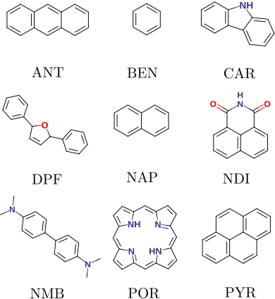
所研究的分子集合，速率见 fig:esd_kF_fluor。
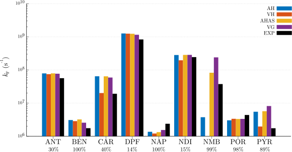
298.15 K 下正己烷中各种分子的预测发射速率。 标签下方的数字是 HT 对速率的贡献。
磷光速率与光谱（Phosphorescence Rates and Spectrum）¶
一般特性（General Aspects）¶
与荧光类似，如果激发态模块中包含了自旋-轨道耦合 （spin-orbit coupling, SOC），就可以计算磷光速率与光谱 （请参阅相关论文 de_souza_phosp_2019）。要启用它， 必须在主输入中选择 ESD(PHOSP)，并且同时提供 GSHESSIAN 和 TSHESSIAN。三重态 Hessian 可以由自旋适配的三重态解析计算得到。
...
***Everything is set, now computing the correlation function***
Homogeneous linewidht is: 50.00 cm-1
Number of points: 131072
Maximum time: 1592.65 fs
Spectral resolution: 3.33 cm-1
Temperature used: 298.15 K
Z value: 5.099843e-42
Energy difference: 41049.37 cm-1
Reference transition dipole (x,y,z): (0.00004 0.00000),
(0.00002 0.00000),
(-0.00058 0.00000)
Calculating correlation function: ...done
Last element of the correlation function: 0.000000,-0.000000
Computing the Fourier Transform: ...done
The calculated fluorescence rate constant is 1.688355e+06 s-1*
with 0.00% from FC and 100.00% from HT
*The rate is multiplied by the square of the refractive index
The fluorescence spectrum was saved in BASENAME.spectrum
也可以像本例这样，通过简单地把多重度设为三 来计算基态三重态：
12 structure (0 1) C -0.82240 -0.05739 0.00515 C 0.42295 0.77803 0.02146 H -0.85252 -0.69527 0.89195 H -0.85090 -0.66429 -0.90325 H -1.69889 0.59680 0.01431 C 1.74379 0.02561 -0.01818 C 2.98907 0.86121 -0.00686 H 3.01366 1.50199 -0.89176 H 3.86561 0.20724 -0.02398 H 3.02300 1.46514 0.90332 O 0.42398 2.00161 0.06749 O 1.74282 -1.19814 -0.05965
!B3LYP DEF2-TZVP(-F) CPCM(ETHANOL) OPT FREQ %TDDFT NROOTS 5 IROOTMULT TRIPLET END * XYZ 0 1 C -0.82240 -0.05739 0.00515 C 0.42295 0.77803 0.02146 H -0.85252 -0.69527 0.89195 H -0.85090 -0.66429 -0.90325 H -1.69889 0.59680 0.01431 C 1.74379 0.02561 -0.01818 C 2.98907 0.86121 -0.00686 H 3.01366 1.50199 -0.89176 H 3.86561 0.20724 -0.02398 H 3.02300 1.46514 0.90332 O 0.42398 2.00161 0.06749 O 1.74282 -1.19814 -0.05965 *
另外，也可以用 VG、AHAS 等方法近似三重态的几何结构和 Hessian。 不过，这需要在单独的 ESD 运行中准备好该 Hessian （absorption.espes 一节）。
此外，必须用 %ESD 下的 DELE 标志输入基态单重态与基态三重态 在各自几何结构下的绝热能差（不带任何零点能校正）。 这里，先前计算的自旋适配三重态用作我们的参考三重态。 使用 TDDFT 计算速率的一个示例输入如下：
磷光速率计算总是伴随着振动分辨磷光光谱的生成， 其可视化方式与荧光光谱相同。
注：计算磷光速率时，各自旋子能级的速率必须分别计算。
可以使用 $NEW_JOB 选项，只改变 IROOT，从而把所有计算写在
同一个输入文件中。在 SOC 之后，三个三重态
（\(M_S\) = -1、0 和 +1 的 \(T_1\)）将分裂为 IROOT 1、2 和 3，
计算最终磷光速率时必须把它们全部包括在内。在这种情况下，
假设这些自旋子能级的几何结构与 Hessian 相同是合理的，
因此三个子能级将使用同一个 .hess 文件。
注 2：输入文件中应当使用基态几何结构， 与荧光的情况类似（见上文）。
注 3：除 DELE 之外，也可以像荧光情形那样用 TDIP 关键词输入 高水平的跃迁偶极矩。例如，这样就可以用 (TD)DFT 的几何结构 和 Hessian 配合 NEVPT2 或 DLPNO-STEOM-CCSD 的跃迁偶极矩 计算磷光速率/光谱。不过请注意，磷光过程中的跃迁偶极矩是复数， 因此需要 6 个而不是 3 个分量。
这里我们计算 298 K 下乙醇中双乙酰（biacetyl）的速率与光谱。 几何结构与 Hessian 如前所述获得，其中基态三重态 由简单的开壳层计算得到。 要计算速率，必须在 %TDDFT（tddft.spinorbitcoupling 一节） 或相应模块下把 DOSOC 标志设为 TRUE， 并且建议设置较多的根以确保态之间的良好混合。
请注意我们为自旋-轨道耦合积分选择了 RI-SOMF(1X) 选项， 但任何可用方法都可以使用 （spectroscopyproperties.soc 一节）。
速率的计算（Calculation of rates）¶
如图所示，双乙酰的预测光谱（fig:esd_biacetyl） 与实验结果相当接近 de_souza_phosp_2019、serpa_calculation_2003。 磷光速率的计算更为复杂，因为有三个三重态贡献。 因此，观测到的速率必须取这三个态的平均值。
要更严格一些，考虑给定温度 \(T\) 下由零场分裂 （Zero Field Splitting, ZFS）引起的玻尔兹曼布居分布， 则应使用 mori_predicting_2014：
其中 \(\Delta E_{1,2}\) 是第一与第二个态之间的能量差，依此类推。
每次计算完成后，三个三重态的速率分别为 8.91 s\(^{-1}\)、0.55 s\(^{-1}\) 和 284 s\(^{-1}\)。利用式 (k_p)， 最终计算速率约为 98 s\(^{-1}\)，而最佳实验值为 102 s\(^{-1}\)（77 K）montalti_handbook_2006，其中约 40% 来自 HT 效应。
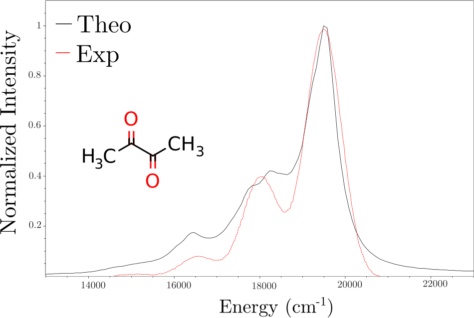
298 K 下乙醇中双乙酰的实验（红色虚线）与理论 （黑色实线，位移约 2800 cm\(^{-1}\)）磷光光谱。
注：当最终态不是单重态时会有一个微妙之处，例如 自由基磷光（双重态基态）或单线态氧磷光 （三重态基态）。在这种情况下，最严格的处理 是对最终态求和、对初始态取平均。例如，对四重态到双重态的磷光有
其中 \(k_{2\to 1}\) 是从初始四重态的第二个子能级到最终双重态 第一个子能级的磷光速率常数，依此类推。注意最终态的 玻尔兹曼因子不进入表达式。遗憾的是，由于 U-TDDFT 存在自旋污染、 不适合计算含 SOC 校正的跃迁偶极矩，这种情况下的跃迁偶极 必须用更高级的方法计算，例如 DFT/ROCIS 或多参考方法。 然后应在输入文件中用 TDIP 关键词给出跃迁偶极。
系间窜越速率（Intersystem Crossing Rates，未发表）¶
一般特性（General Aspects）¶
路径积分方法的又一个应用是计算系间窜越 （Intersystem Crossing, ISC）速率，即不同多重度态之间的 非辐射跃迁速率。只要有两个几何结构、两个 Hessian 以及相关的自旋-轨道耦合矩阵元，就可以计算它。
输入与前面讨论的类似。这里应在主输入上使用 ESD(ISC) 以表明是系间窜越计算，初始态与最终态的 Hessian 分别由 ISCISHESSIAN 和 ISCFSHESSIAN 提供。请注意， 输入文件中使用的几何结构应当对应于最终态（FINAL state）的几何结构， 即通过 ISCFSHESSIAN 标志指定的那个。相关的矩阵元 可以用 ORCA 中任何可用方法计算，并以 SOCME Re,Im 的形式 输入到 %ESD 下，其中 Re 和 Im 分别代表其实部与虚部 （单位为原子单位！）。
一个简单的例子是：用 TD-DFT 计算蒽（anthracene）的激发单重态 与基态三重态的几何结构和 Hessian。然后用同样的方法 （细节见下文）计算某一特定三重态自旋子能级的 自旋-轨道耦合（SOC）矩阵元，也可以采用 CASSCF、MRCI、 STEOM-CCSD 或其他理论水平的方法。最后，用如下输入 获得系间窜越（ISC）速率：
!B3LYP DEF2-TZVP(-F) TIGHTSCF CPCM(ETHANOL) ESD(PHOSP) RI-SOMF(1X)
%TDDFT
NROOTS 20
DOSOC TRUE
TDA FALSE
IROOT 1
END
%ESD GSHESSIAN "BIA.hess"
TSHESSIAN "BIA_T1.hess"
DOHT TRUE
DELE 17260
END
* XYZFILE 0 1 BIA.xyz
$NEW_JOB
!B3LYP DEF2-TZVP(-F) TIGHTSCF CPCM(ETHANOL) ESD(PHOSP) RI-SOMF(1X)
%TDDFT
NROOTS 20
DOSOC TRUE
TDA FALSE
IROOT 2
END
%ESD GSHESSIAN "BIA.hess"
TSHESSIAN "BIA_T1.hess"
DOHT TRUE
DELE 17260
END
* XYZFILE 0 1 BIA.xyz
$NEW_JOB
!B3LYP DEF2-TZVP(-F) TIGHTSCF CPCM(ETHANOL) ESD(PHOSP) RI-SOMF(1X)
%TDDFT
NROOTS 20
DOSOC TRUE
TDA FALSE
IROOT 3
END
%ESD GSHESSIAN "BIA.hess"
TSHESSIAN "BIA_T1.hess"
DOHT TRUE
DELE 17260
END
* XYZFILE 0 1 BIA.xyz
单重态与三重态之间的 SOCME 由三个复数组成， 而不只是一个，因为三重态有三个子能级。如果用户把 某个子能级的 SOCME 作为 ISC 速率计算的输入， 得到的就是与该特定子能级相关联的 ISC 速率。 然而，实验上通常不区分三重态的三个子能级， 实验报告的 ISC 速率就如同三个子能级是同一物种一样。 因此，单重态到三重态的 ISC 速率是单重态到三个三重态子能级 ISC 速率的总和。幸运的是，在可以忽略赫茨伯格-泰勒效应 （见下文）的情况下，不必进行三次速率计算再把它们相加， 因为速率正比于 SOCME 的模平方。因此， 可以只做一次 ESD 计算，其中 SOCME 取三个 SOCME 分量 模平方之和的平方根。
作为示例，考虑乙酰苯（acetophenone）的 \(S_1\) 到 \(T_1\) ISC 速率。 首先优化 \(S_0\) 几何结构，（手动微调几何结构以破坏镜面对称后） 把它作为 \(S_1\) 与 \(T_1\) 态几何优化和频率计算的初始猜测。 然后在 \(T_1\) 几何结构处计算 \(S_1\)-\(T_1\) SOCME （注意，与通常一样，ESD 计算应当使用最终态的几何结构； 这一点可能与其他某些非 ORCA 的程序不同）。 这些计算用一个复合脚本来完成最为方便， 当然各步也可以用单独的输入文件完成。
!ESD(ISC) NOITER
%ESD
ISCISHESSIAN "ANT_S1.hess"
ISCFSHESSIAN "ANT_T1.hess"
DELE 11548
SOCME 0.0, 2.33e-5
END
* XYZFILE 0 1 ANT_T1.xyz
在确认两个 Hessian 都没有虚频率之后（这非常重要！）， 就可以读取计算得到的 SOCME：
--------------------------------------------------------------------------------
CALCULATED SOCME BETWEEN TRIPLETS AND SINGLETS
--------------------------------------------------------------------------------
Root <T|HSO|S> (Re, Im) cm-1
T S Z X Y
--------------------------------------------------------------------------------
1 0 ( 0.00 , -2.00 ) ( 0.00 , 29.24 ) ( -0.00 , -41.11 )
1 1 ( 0.00 , -0.59 ) ( 0.00 , 1.79 ) ( -0.00 , -2.57 )
1 2 ( 0.00 , 0.52 ) ( 0.00 , -3.19 ) ( -0.00 , 3.21 )
1 3 ( 0.00 , -2.39 ) ( 0.00 , 14.57 ) ( -0.00 , -19.53 )
2 0 ( 0.00 , -0.11 ) ( 0.00 , 2.78 ) ( -0.00 , -2.72 )
2 1 ( 0.00 , 2.25 ) ( 0.00 , -20.07 ) ( -0.00 , 28.07 )
2 2 ( 0.00 , 0.02 ) ( 0.00 , -0.13 ) ( -0.00 , 0.29 )
2 3 ( 0.00 , -0.17 ) ( 0.00 , 0.59 ) ( -0.00 , -1.27 )
3 0 ( 0.00 , -0.01 ) ( 0.00 , 0.05 ) ( -0.00 , -0.06 )
3 1 ( 0.00 , -0.01 ) ( 0.00 , 0.19 ) ( -0.00 , -1.36 )
3 2 ( 0.00 , -0.01 ) ( 0.00 , -0.05 ) ( -0.00 , -0.14 )
3 3 ( 0.00 , -0.00 ) ( 0.00 , 0.14 ) ( -0.00 , -0.16 )
然后由以 "1 1" 开头的那一行计算 \(S_1\) 与 \(T_1\) 之间的 "总" SOCME：
因此在随后的 ISC 速率计算中，应在 %esd 块里写
socme 1.45e-5。
重要的是，上述方法只适用于单重态到三重态的 ISC， 而不适用于三重态到单重态的 ISC（包括但不限于 \(T_1\to S_0\) 和 \(T_1\to S_1\) 过程）。在后一种情况下，假设 三重态子能级是简并的且处于快速平衡，我们 得到的观测速率常数是三个三重态子能级速率常数的 平均值而非总和，因为每个三重态子能级 的玻尔兹曼权重都是 1/3。因此，代入 ESD 模块以获得观测速率常数的 "有效" SOCME 为 （这里模平方 \(|SOCME_x|^2\) 应按 \(Re(SOCME_x)^2 + Im(SOCME_x)^2\) 计算，依此类推）：
即比单重态到三重态的情形小一个 \(\sqrt{3}\) 的因子。 不过，两个假设（三重态子能级简并、子能级间快速平衡） 在某些情况下都可能不成立，这可能导致预测速率的误差。 尽管如此，在许多情况下，这种简单方法给出的速率 至少在数量级上是正确的。
注：ESD(ISC) 不会自动计算绝热能差， 因此必须在输入中提供它。它是初始态的能量减去最终态的能量， 两者各自在各自的几何结构下计算。
注 2：所有其他涉及坐标系变换、Duschinsky 旋转等的选项 在这里同样可用。
注 3：对许多分子而言，\(S_1 \to T_1\) ISC 过程并不是主导的 ISC 通道。这是因为 \(S_1\) 与 \(T_1\) 的激发态组成往往相似， 因此它们之间的 ISC 跃迁经常不满足 El-Sayed 规则。 即使实验上观测到的激发态只有 \(S_1\) 与 \(T_1\)， 初始 ISC 仍可能以 \(S_1 \to T_n (n>1)\) 为主， 随后发生超快的 \(T_n \to T_1\) 内转换。
注 4：类似地，如果分子从较高的单重态 \(S_n (n>1)\) 出发， 主导的 ISC 通道不一定是从 \(S_n\) 直接到某个三重态的 ISC。 相反，\(S_n\) 有可能（但不必然）先衰变到较低的单重激发态， 然后才发生 ISC。
注 5：如果你在更高理论水平上计算 DELE 或 SOCME 并把它作为 ESD 计算的输入，请务必确保在 Hessian 与 DELE/SOCME 计算中 选择的是同一个激发态（按态的组成而言，而不是按能量排序）。 例如，假设你已经得到了 \(T_2\) 态的几何结构和 Hessian， 但更高理论水平下的 \(T_2\) 态与 Hessian 计算所用理论水平下的 \(T_2\) 态组成非常不同；相反，是高理论水平下的 \(T_3\) 与低理论水平下的 \(T_2\) 态组成相同。在这种情况下， 你应该在 SOCME 输出文件中使用与 \(T_3\) 相关的 SOCME。
注 6：ESD 模块不要求 ISC 过程的最终态在能量上低于初始态。 因此，反向系间窜越（Reverse ISC, RISC）速率可以用 与 ISC 速率完全相同的方式计算。 但请注意：(1) 如果你想用 DELE 关键词提供绝热能差， 该能差应为负值；(2) 对 SOCME 的三个分量是求和还是取平均， 取决于最终态是否为三重态，而不是较低的态是否为三重态。
注 7：单重态与三重态以外的态之间的 ISC 跃迁 （例如双重态与四重态之间）也可以计算， 前提是 SOCME 由恰当的自旋适配或多参考方法计算， 例如 DFT/ROCIS 或 NEVPT2。 各子能级 SOCME 的模平方应对所有最终态自旋子能级求和、 对所有初始态自旋子能级取平均， 与磷光情形类似（phosphorescence.rates）。
ISC、TD-DFT 与 HT 效应（ISC, TD-DFT and the HT effect）¶
在上面的蒽的例子中，结果是 ISC 速率（\(k_{ISC}\)）小于 \(1 s^{-1}\)，这与 \(77 K\) 下 \(10^{8} s^{-1}\) 的实验值 相差甚远 montalti_handbook_2006。 在这一特定情形下，造成差异的原因是 ISC 主要由赫茨伯格-泰勒效应引起， 因此也必须把它包括进来。为此需要计算 SOCME 对简正模式的导数， 目前只有用 CIS/TD-DFT 才可行。
使用 %CIS/TDDFT 选项时，可以通过 SROOT 和 TROOT 标志 控制为哪些单重态和三重态计算 SOCME， 用 TROOTSSL 标志指定三重态自旋子能级（1、0 或 -1）。
实际上，要获得足够接近实验值的 ISC 速率（\(k_{ISC}\)）， 需要考虑初始单重态与所有可及最终态之间的全部可能跃迁。 对蒽而言，预测的主导通道是基态三重态（\(T_1\)）和 第一激发三重态（\(T_2\)），这与实验观测一致 Wyatt_ant_isc，而下一个三重态（\(T_3\)） 在能量上太高、无足轻重（见下图 fig:esd_ant_isc）。 用于计算 \(77 K\) 下从 \(S_1\) 到 \(T_1\) 的 \(k_{ISC}\) 的一个示例输入是：
34 structure (0 3) C 1.512698 7.783764 -0.013405 C 2.900029 7.735359 -0.016012 C 3.664170 8.950745 0.000408 C 2.952045 10.199539 0.007630 C 1.564497 10.214795 0.009890 C 0.827311 9.015246 0.000726 H 0.946857 6.847253 -0.027731 H 3.394565 6.763402 -0.041976 H 3.505090 11.140193 0.017889 H 1.039592 11.175094 0.019479 H -0.265468 9.038211 0.000969 C 5.059695 8.958412 0.000442 O 5.733735 10.161120 -0.048672 C 5.927824 7.713913 0.020029 H 5.442615 6.938582 0.639989 H 6.073177 7.326421 -1.014490 H 6.923426 7.950459 0.447785 C 1.512698 7.783764 -0.013405 C 2.900029 7.735359 -0.016012 C 3.664170 8.950745 0.000408 C 2.952045 10.199539 0.007630 C 1.564497 10.214795 0.009890 C 0.827311 9.015246 0.000726 H 0.946857 6.847253 -0.027731 H 3.394565 6.763402 -0.041976 H 3.505090 11.140193 0.017889 H 1.039592 11.175094 0.019479 H -0.265468 9.038211 0.000969 C 5.059695 8.958412 0.000442 O 5.733735 10.161120 -0.048672 C 5.927824 7.713913 0.020029 H 5.442615 6.938582 0.639989 H 6.073177 7.326421 -1.014490 H 6.923426 7.950459 0.447785
%pal nprocs 16 end * xyz 0 1 C 1.512698 7.783764 -0.013405 C 2.900029 7.735359 -0.016012 C 3.664170 8.950745 0.000408 C 2.952045 10.199539 0.007630 C 1.564497 10.214795 0.009890 C 0.827311 9.015246 0.000726 H 0.946857 6.847253 -0.027731 H 3.394565 6.763402 -0.041976 H 3.505090 11.140193 0.017889 H 1.039592 11.175094 0.019479 H -0.265468 9.038211 0.000969 C 5.059695 8.958412 0.000442 O 5.733735 10.161120 -0.048672 C 5.927824 7.713913 0.020029 H 5.442615 6.938582 0.639989 H 6.073177 7.326421 -1.014490 H 6.923426 7.950459 0.447785 * %compound new_step # Compound 1: S1 opt ! B3LYP def2-SV(P) opt tightopt freq %tddft tda false nroots 2 iroot 1 end step_end new_step # Compound 2: T1 opt ! B3LYP def2-SV(P) opt tightopt freq * xyz 0 3 C 1.512698 7.783764 -0.013405 C 2.900029 7.735359 -0.016012 C 3.664170 8.950745 0.000408 C 2.952045 10.199539 0.007630 C 1.564497 10.214795 0.009890 C 0.827311 9.015246 0.000726 H 0.946857 6.847253 -0.027731 H 3.394565 6.763402 -0.041976 H 3.505090 11.140193 0.017889 H 1.039592 11.175094 0.019479 H -0.265468 9.038211 0.000969 C 5.059695 8.958412 0.000442 O 5.733735 10.161120 -0.048672 C 5.927824 7.713913 0.020029 H 5.442615 6.938582 0.639989 H 6.073177 7.326421 -1.014490 H 6.923426 7.950459 0.447785 * step_end new_step # Compound 3: SOC at T1 geometry ! B3LYP def2-SV(P) %tddft tda false nroots 3 triplets true dosoc true end # Here it is assumed that the input file is named "a.inp" * xyzfile 0 1 a_Compound_2.xyz step_end end
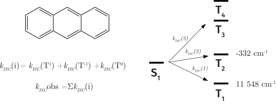
蒽中系间窜越的计算示意图。 \(S_1\) 与各个三重态之间的 \(k_{ISC}(i)\) 是到各自旋子能级 全部跃迁的总和，而实际观测到的 \(k_{ISC}^{obs}\) 则把这些跃迁合并在一起。右侧是激发态分布示意图， 旁边标注了 \(E(S_1) - E(T_n)\)。由于 \(T_3\) 在能量上过高， 涉及 \(T_3\) 的系间窜越可以放心地忽略。
随后计算 SOCME 的导数，并在末尾打印速率。 对 \(T_2\) 态做同样的计算并把这些值相加， 即可得到预测的 \(k_{ISC}^{obs} = 1.17 \times 10^8 s^{-1}\)， 与实验值接近得多（何况实验值本身也带有较大误差）。
注：在 SOCME 相对较大（例如 SOCME \(>5 cm^{-1}\)）的情况下， 赫茨伯格-泰勒效应可能可以忽略，简单的弗兰克-康登 计算就应能给出良好结果。这通常适用于含重原子的分子， 此时振动电子耦合不太显著。
注 2：始终牢记实际上存在三个三重态自旋子能级， 从单重态到所有子能级的跃迁都应包括在内。
注 3：ISC 速率对能量差极其敏感。 计算时务必谨慎。如果有更精确的激发态方法可用， 应考虑用它来进行预测。
注 4：对于单重态与三重态以外态之间的 ISC 跃迁， 赫茨伯格-泰勒效应尚未实现。
内转换速率（Internal Conversion Rates，未发表）¶
ESD 模块还可以在 TDDFT 和 TDA 水平上计算从激发态到基态的 内转换（Internal Conversion, IC）速率。 除了基态和激发态的 Hessian 之外，唯一还需要计算的量 是非绝热耦合矩阵元（nonadiabatic coupling matrix elements, NACME）。
输入文件很简单：
--------------------------------------------------------------------------------
CALCULATED SOCME BETWEEN TRIPLETS AND SINGLETS
--------------------------------------------------------------------------------
Root <T|HSO|S> (Re, Im) cm-1
T S Z X Y
--------------------------------------------------------------------------------
1 0 ( 0.00 , -2.00 ) ( 0.00 , 29.24 ) ( -0.00 , -41.11 )
1 1 ( 0.00 , -0.59 ) ( 0.00 , 1.79 ) ( -0.00 , -2.57 )
1 2 ( 0.00 , 0.52 ) ( 0.00 , -3.19 ) ( -0.00 , 3.21 )
1 3 ( 0.00 , -2.39 ) ( 0.00 , 14.57 ) ( -0.00 , -19.53 )
2 0 ( 0.00 , -0.11 ) ( 0.00 , 2.78 ) ( -0.00 , -2.72 )
2 1 ( 0.00 , 2.25 ) ( 0.00 , -20.07 ) ( -0.00 , 28.07 )
2 2 ( 0.00 , 0.02 ) ( 0.00 , -0.13 ) ( -0.00 , 0.29 )
2 3 ( 0.00 , -0.17 ) ( 0.00 , 0.59 ) ( -0.00 , -1.27 )
3 0 ( 0.00 , -0.01 ) ( 0.00 , 0.05 ) ( -0.00 , -0.06 )
3 1 ( 0.00 , -0.01 ) ( 0.00 , 0.19 ) ( -0.00 , -1.36 )
3 2 ( 0.00 , -0.01 ) ( 0.00 , -0.05 ) ( -0.00 , -0.14 )
3 3 ( 0.00 , -0.00 ) ( 0.00 , 0.14 ) ( -0.00 , -0.16 )
这里 \(S_0\) 几何结构以及 \(S_0\) 和 \(S_1\) 的 Hessian 文件 是在 B3LYP-D3/def2-SVP 理论水平上获得的。注意 NACME 计算 使用完整的 TDDFT 并包含电子平移因子 （electron translation factor, ETF），这通常是推荐的做法。 "iroot 1" 指定初始态为 \(S_1\)；最终态始终是 \(S_0\)， 这一点不能更改。
计算得到的 IC 速率常数打印在输出文件接近末尾处：
***Everything is set, now computing the correlation function***
Homogeneous linewidth is: 50.00 cm-1
Inhomogeneous linewidth is: 250.00 cm-1
Number of points: 32768
Maximum time: 157.86 fs
Temperature used: 298.15 K
Z value: 4.924300e-66
Cutoff for the correlation function: 1.00e-12
Adiabatic energy difference: 16699.89 cm-1
0-0 energy difference: 16382.09 cm-1
Calculating correlation function: ...done
Last element of the correlation function: -0.000000,-0.000000
The calculated internal conversion rate constant is 3.823146e+08 s-1
Total run time: 0 hours 2 minutes 50 seconds
****ORCA ESD FINISHED WITHOUT ERROR****
为获得更精确的结果，可以加入显式溶剂层，因为 隐式溶剂化模型只描述溶剂对溶质的静电与色散 效应，无法提供有助于耗散激发能的额外振动 自由度。反过来，使用隐式溶剂也忽略了溶剂黏度 对内转换的抑制作用，而当需要与低温下进行的 实验作比较时，这一点尤为重要。
共振拉曼光谱（Resonant Raman Spectrum）¶
一般特性（General Aspects）¶
采用与已发表的吸收和荧光理论框架类似的方法， 我们还发展了一种计算分子共振拉曼光谱的方法 de_souza_RRaman_2019。 在这一实现中，可以用 HESSFLAG 采用前面提到的所有 获取激发态势能面（PES）的方法，包含 Duschinsky 旋转， 甚至在其上再考虑赫茨伯格-泰勒效应。 在第一行输入中使用 ESD(RR) 或 ESD(RRAMAN) 即可启动该计算。 需要指出的是，默认情况下我们计算的是 D. A. Long 所描述的"散射因子（Scattering Factor）"或 "拉曼活性（Raman Activity）"long_raman_2001 （更多信息见 esd.raman 一节）。
使用该模块时，激光能量可由 LASERE 标志控制。 如果不指定激光能量，默认使用 0-0 能差。 可以用 LASERE 10000, 15000, 20000 等选择多个能量， 如果指定了多个能量，将保存一系列名为 BASENAME.spectrum.LASERE 的文件。此外，也可以用 STATES 标志 指定若干感兴趣的态，但两者不能同时使用。
作为例子，让我们预测苯氧自由基（phenoxyl radical）的共振拉曼光谱。 你至少需要基态几何结构和 Hessian，然后可以用如下方式启动 ESD 计算：
!B3LYP DEF2-TZVP(-F) TIGHTSCF ESD(ISC)
%TDDFT NROOTS 5
SROOT 1
TROOT 1
TROOTSSL 0
DOSOC TRUE
END
%ESD ISCISHESS "ANT_S1.hess"
ISCFSHESS "ANT_T1.hess"
USEJ TRUE
DOHT TRUE
TEMP 77
DELE 11548
END
* XYZFILE 0 1 ANT_T1.xyz
$NEW_JOB
!B3LYP DEF2-TZVP(-F) TIGHTSCF ESD(ISC)
%TDDFT NROOTS 5
SROOT 1
TROOT 1
TROOTSSL -1
DOSOC TRUE
END
%ESD ISCISHESS "ANT_S1.hess"
ISCFSHESS "ANT_T1.hess"
USEJ TRUE
DOHT TRUE
TEMP 77
DELE 11548
END
* XYZFILE 0 1 ANT_T1.xyz
...
注意
输入中使用的 LASERE 不一定与实验所用的激光能量相同。 它应当与理论跃迁能成正比。例如， 如果实验 0-0 \(\Delta\)E 是 30000 cm\(^{-1}\) 而所用激光能量 是 28000 cm\(^{-1}\)，那么对于理论 \(\Delta\)E 为 33000 cm\(^{-1}\) 的情形， 应使用 31000 cm\(^{-1}\) 的激光能量才能得到相应的 理论结果。在 ESD 输出的末尾会打印理论 0-0 \(\Delta\)E 供参考。
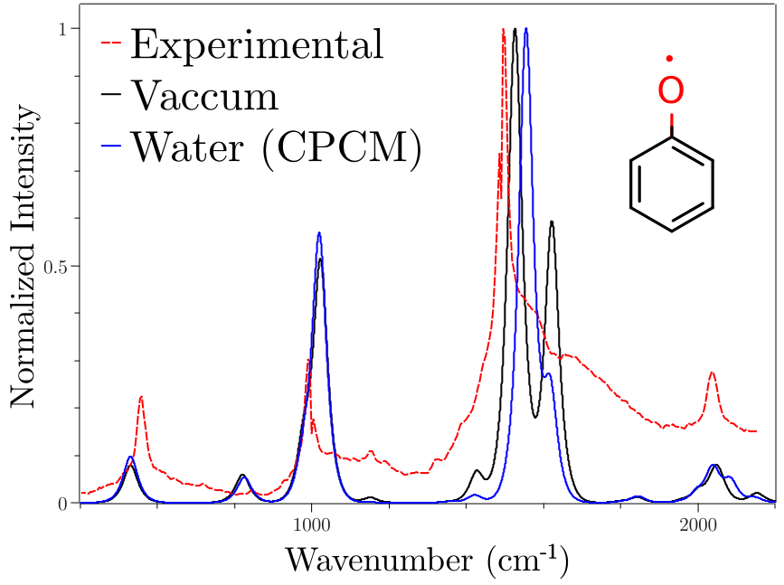
苯氧自由基的理论（黑色实线——真空；蓝色实线——水）与 实验（红色虚线——水）共振拉曼光谱。
注：在 90 度下以任意偏振收集的实际拉曼强度 I(\(\pi/2; \parallel^{s}+\perp^{s},\perp^{i}\)) long_raman_2001， 可以通过在 %ESD 下设置 RRINTES 为 TRUE 得到。
结果见 fig:esd_phe_rr。本例中使用了 默认方法 VG。如果想包含溶剂效应， 则应添加 CPCM(WATER)。可以看到，在水中计算时 主峰有明显差异。
有必要澄清此处与 ORCA_ASA 用法的一些区别。
使用 ESD 模块时，不需要选择谱图中要包括哪些模式；
我们把它们全部包括在内。此外，我们只能在 0 K 下运行，
且最大"拉曼阶（Raman Order）"为 2。这意味着我们考虑
全部基频跃迁、第一泛频与组合频带，
但不包括热带。这一近似层级对大多数应用而言
已经足够。
如果处理的是非常大的体系并希望缩短计算时间， 可以在 %ESD 选项下请求 RORDER 1。该设置只包括 基频跃迁而省略更高阶的谱带。这一做法可能很有意义， 尤其是在同时包含 Duschinsky 旋转与赫茨伯格-泰勒效应时， 它们会显著增加计算时间。
共振拉曼光谱打印时会把"拉曼阶" 1 与 2 的贡献分开给出，如下所示：
Energy TotalSpectrum IntensityO1 IntensityO2
0.000000 2.722264e-08 2.722264e-08 8.436299e-30
0.305176 2.824807e-08 2.824807e-08 9.043525e-30
0.610352 2.931074e-08 2.931074e-08 9.693968e-30
...
同位素标记（Isotopic Labeling）¶
如果想模拟同位素标记对共振拉曼光谱的影响， 不需要重新计算 Hessian。相反，可以直接修改 Hessian 文件中相应原子的质量。这可以通过 编辑输入文件的 \(atoms\) 部分或直接编辑 Hessian 文件 本身来完成（另见 vib.isotopeshifts 一节）。 完成这些修改后，可以用修改后的 Hessian 文件重新运行 ESD， 例如：
# S1-S0 IC rate of azulene
! B3LYP D3 def2-SVP ESD(IC) CPCM(methanol)
%tddft
tda false # Full TDDFT is recommended over TDA
nroots 3
iroot 1 # Change to 2 for S2-S0 IC rate, etc.
nacme true # Calculate the NACME between the iroot-th root with the ground state
etf true # Use electron translation factor (recommended)
end
%esd
gshessian "azulene_S0.hess" # Ground state Hessian (B3LYP-D3/def2-SVP)
eshessian "azulene_S1.hess" # Excited state Hessian (TD-B3LYP-D3/def2-SVP)
usej true # Use Duschinsky rotation (recommended)
end
# Ground state geometry (B3LYP-D3/def2-SVP)
* xyzfile 0 1 azulene_S0.xyz
如 fig:esd_phe_rr_ISO 所示，苯氧自由基与其氘代产物之间的区别很明显。 1000 cm\(^{-1}\) 附近的谱峰对应于 C-H 键， 氘代后向低能方向移动。这一约 150 cm\(^{-1}\) 的差异 与实验结果吻合得很好 tripathi_resonance_1984。
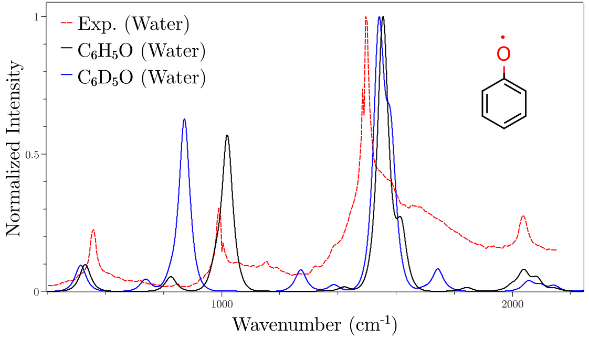
苯氧自由基的理论（黑色实线——C\(_6\)H\(_5\)O；蓝色实线—— C\(_6\)D\(_5\)O）与实验（红色虚线）共振拉曼光谱。
注：每当用 HESSFLAG 方法计算了 ES Hessian， 它都会保存在名为 BASENAME.ES.hess 的文件中。如果想重复 一次计算，可以直接把该文件用作输入而不必 重新计算所有内容。
共振拉曼与线宽（RRaman and Linewidths）¶
关键词 LINEW 与 INLINEW 控制关联函数计算中所用的 LINES 函数，它们与中间态的寿命和能量无序有关。 然而，它们并不决定谱线线宽本身，而是决定 线型。谱线线宽由 RRSLINEW 关键词独立设置， 其默认值为 10 \(cm^{-1}\)。
需要注意的是，LINEW 与 INLINEW 会显著影响 最终谱图的形状，应当根据具体需要合适地选取。 虽然默认值通常适用，但你可能需要根据自己的 要求进行调整。
ESD 与 STEOM-CCSD 或其他高水平方法——APPROXADEN 选项（ESD and STEOM-CCSD or other higher level methods - the APPROXADEN option）¶
如果你计划把 ESD 模块与 STEOM-CCSD 或其他 高水平方法（如 EOM-CCSD、CASSCF/NEVPT2）一起使用， 有一些建议需要特别说明。
由于这些方法目前没有解析梯度，默认会请求 数值梯度来计算激发态几何结构。 这当然会耗费大量时间，因为需要大约 \(3 \times N_{\text{atoms}}\) 次单点计算。 我们强烈建议：在这些情况下，用 DFT/TD-DFT 获得基态/激发态/三重态的几何结构和 Hessian， 只在最后的 ESD 步骤中使用高水平方法。
此外，我们建议在 %ESD 选项下使用 APPROXADEN。
在这种情况下，只需在基态几何结构处做一次单点计算， 绝热能差将自动从 ES Hessian 信息中得到， 而不需要在外推的 ES 几何结构处再做一次单点计算 （后者可能不稳定）。
圆偏振光谱（Circularly Polarized Spectroscopies）¶
理论的一般特性（General Aspects of the Theory）¶
当圆偏振（circularly polarized, CP）光与手性化学结构 （光学活性）相互作用时，它对左旋和右旋 CP 光的吸收不同 （\(I_{LCP} \neq I_{RCP}\)），从而产生电子圆二色 （electronic circular dichroism, ECD）。 类似地，它对左旋和右旋 CP 光的发射也可以不同，产生 圆偏振发光（CP luminescence, CPL），其中包括圆偏振荧光（CPF） 和圆偏振磷光（CPP）光谱。
从 ORCA 6 开始，ESD 模块被扩展到可以计算化学体系的 CP 速率与光谱。这使得计算振动电子效应对 ECD、CPF 和 CPP 谱的影响成为可能。其方法论与非偏振光和物质的 相互作用（包括吸收和光致发光）总体类似。 不过，当 CP 光子与光学活性体系相互作用时，光子的电场 诱导电荷的线性位移（跃迁电偶极），而磁场则诱导 电荷的环流（跃迁磁偶极）。这些相互作用合在一起 使电子以螺旋运动的方式被激发， 其中同时涉及平动和转动以及与之相关的算符。
在一个常用做法中，定义一个实验室坐标系，其 z 轴 定义光传播的方向，就可以用复矢量 \(\mathcal{E} \pm= \frac{1}{\sqrt{2} } (\hat{x} \pm i \hat{y})\) 来产生 CP 光的相互作用
在这一框架下，FFMIO 算符按下式变换：
在 ECD 和 CPL（CPF 或 CPP）光谱中，测量强度都与 左旋和右旋偏振跃迁矩的吸收或发光之差有关：
由此得到模平方 \(|{T_{IF}^\pm|}^2\) 的和与差的下列表达式：
因此，在电偶极（ED）近似下，通过对式 (delta_LR) 取 取向平均并利用费米黄金规则，可以计算 ECD 与 CPL 的辐射跃迁速率：
其中 \(\omega_{ECD/CPL}\) 分别是激发与发射 CP 光子的能量， 而 \(\omega_{FI}\) 是吸收或光致发光过程中初态与末态之间的能量。 类似地，\(E_{FI}\) 是跃迁能，\(\delta\) 代表由相关末态寿命引起的 谱线增宽机制，c 是光速。 在上述表达式中，\(\hat{\mu}\) 是电偶极算符，而 \(\hat{m}\) 是相应的磁偶极算符 \(\hat{m}=\frac{1}{2m_ec}\sum_{i}{r_i\times\widehat{p_i}}\)， \(m_e\) 是电子质量。在上述表达式中 \(Im\left(\left|\left\langle\Psi_I|\hat{\mu}|\left.\Psi_F\right\rangle\right.\left\langle\Psi_F|\hat{m}|\left.\Psi_I\right\rangle\right.\right|\right)\) 代表旋光强度（rotatory strength, \(R_{IF}\)）。如上所述，包含振动电子耦合的跃迁速率—— 在弗兰克-康登（FC）与赫茨伯格-泰勒（HT）极限下——可以通过 路径积分方法高效地求解 de_souza_fluor_2018，其中可以从 相应关联函数 \(\chi_{(t)}\) 的傅里叶变换（FT）计算 \(k_{ECD/CPL}^{obs}\)， 而该关联函数由多维谐振子的路径积分按下式计算 shafei_2024_cpl：
其中 \(\alpha\) 是一组常数的集合，对于 CP 跃迁的单光子速率（ECD、CPL）， 在旋光强度表达式中考虑电偶极与磁偶极相互作用后，它取如下形式 shafei_2024_cpl：
其中 \(\mu_e\) 与 \(m_e\) 分别代表初态与末态 \(I, F\) 之间的 跃迁偶极 \({\langle\Psi}_I|\hat{\mu}|\left.\Psi_F\right\rangle\) 和磁偶极 \(\left\langle\Psi_F|\hat{m}|\left.\Psi_I\right\rangle\right.\) 矩积分，而：
其中，这些迹可以按照文献 de_souza_fluor_2018 中讨论的方法求值。
最后，很常见的是把 ECD 与 CPL 谱强度表示为 归一化的吸收与光致发光强度，从而定义 不对称因子（dissymmetry factor）\(g_{abs}\) 与 \(g_{lum}\) 的类似表达式：
这意味着相应的不对称谱也可以被计算出来， 其中 D 与 R 分别是跃迁偶极的平方与旋光强度。
振动对 ECD 谱的影响（Vibration effects on ECD spectra）¶
众所周知，垂直激发（VE）计算得到的 ECD 谱 经常无法描述实验结果。(R)-甲基环氧乙烷就是这样一个例子。 未平移或平移过的 VE ECD BP86 计算谱 在线型和强度上都与实验不符。已有人证明， 这些谱需要通过考虑振动电子相互作用来计算 barone_2016_ecd。
因此，按如下输入进行结构优化与频率计算：
***Everything is set, now computing the correlation function***
Homogeneous linewidth is: 50.00 cm-1
Inhomogeneous linewidth is: 250.00 cm-1
Number of points: 32768
Maximum time: 157.86 fs
Temperature used: 298.15 K
Z value: 4.924300e-66
Cutoff for the correlation function: 1.00e-12
Adiabatic energy difference: 16699.89 cm-1
0-0 energy difference: 16382.09 cm-1
Calculating correlation function: ...done
Last element of the correlation function: -0.000000,-0.000000
The calculated internal conversion rate constant is 3.823146e+08 s-1
Total run time: 0 hours 2 minutes 50 seconds
****ORCA ESD FINISHED WITHOUT ERROR****
然后就可以按如下输入在 VE 近似下、用 ESD 模块计算 ESD 光谱：
!PBE0 DEF2-SVP TIGHTSCF ESD(RR)
%TDDFT
NROOTS 5
IROOT 3
END
%ESD
GSHESSIAN "PHE.hess"
LASERE 28468
END
* XYZFILE 0 2 PHE.xyz
结果见图 fig:C3H6O_ecd_ve_esd，可以看到正如预期的那样， 只有在同时考虑 FC 与 HT 振动电子耦合方案时， 计算谱才与实验一致。
C3H6O 分子的实验（黑色）与 BP86/TDDFT（VE 为蓝色，FC+HT 为红色）ECD 谱
CP-FLUOR 与 CP-PHOS 谱的计算：\(C_{3}H_{6}O\) 算例（Computation of CP-FLUOR vs CP-PHOS spectra. The case of \(C_{3}H_{6}O\).）¶
按照前述计算 PL（荧光（PF）或磷光（PP））谱的策略， 对 \(C_{3}H_{6}O\) 也可以得到相应的 CPL 与 CPP 谱。
为此需要分别计算第一激发单重态（ES1）和三重态（ET0）的 Hessian， 所用输入如下
Energy TotalSpectrum IntensityO1 IntensityO2
0.000000 2.722264e-08 2.722264e-08 8.436299e-30
0.305176 2.824807e-08 2.824807e-08 9.043525e-30
0.610352 2.931074e-08 2.931074e-08 9.693968e-30
...
以及
!PBE0 DEF2-SVP TIGHTSCF ESD(RR) CPCM(WATER)
%TDDFT
NROOTS 5
IROOT 3
END
%ESD
GSHESSIAN "PHE_WATER_ISO.hess"
ESHESSIAN "PHE_WATER_ISO.ES.hess"
END
* XYZFILE 0 2 PHE_WATER.xyz
然后就可以如下设置相应的 PL 与 CPL 输入：
PF：
CPF：
10 structure (0 1) C 0.02461655377138 0.08670067686058 -5.20436273663217 C -0.23485307714882 -0.31738971302751 -3.80610272711970 O -0.15359212444282 1.06795113221760 -4.17749263689755 H 1.05055243293426 -0.00333310016875 -5.61325012342071 H -0.78323750369168 0.02252140387747 -5.95969728166753 H -1.26417590138099 -0.65347889194363 -3.56065466091728 C 0.84884023150886 -0.84537627906508 -2.89604274193698 H 0.68194744925825 -0.50794125098111 -1.85197471265376 H 0.85716491819315 -1.95559179229870 -2.89420656551675 H 1.84600617099845 -0.48435690147087 -3.21751813823758
!BP86 DEF2-SVP TIGHTSCF OPT FREQ * xyz 0 1 C 0.02461655377138 0.08670067686058 -5.20436273663217 C -0.23485307714882 -0.31738971302751 -3.80610272711970 O -0.15359212444282 1.06795113221760 -4.17749263689755 H 1.05055243293426 -0.00333310016875 -5.61325012342071 H -0.78323750369168 0.02252140387747 -5.95969728166753 H -1.26417590138099 -0.65347889194363 -3.56065466091728 C 0.84884023150886 -0.84537627906508 -2.89604274193698 H 0.68194744925825 -0.50794125098111 -1.85197471265376 H 0.85716491819315 -1.95559179229870 -2.89420656551675 H 1.84600617099845 -0.48435690147087 -3.21751813823758 *
PP：
!BP86 DEF2-SVP TIGHTSCF PAL4
%TDDFT
NROOTS 10
END
%ESD
ESDFlag ECD
GSHESSIAN "c3h6o_opt_freq.hess "
PRINTLEVEL 2
DOHT TRUE
LINEW 500
SPECRANGE 40000, 70000
STATES 1,2,3,4,5,6,7,8,9,10
END
* xyzfile 0 1 c3h6o_opt_freq.xyz
CPP：
!BP86 DEF2-SVP TIGHTSCF OPT FREQ
%TDDFT
NROOTS 10
IROOT 1
IMULT 1
END
* xyzfile 0 1 c3h6o_opt_freq.xyz
结果总结在图 fig:C3H6O_cpf_cpp 中
a) FC+HT 振动电子耦合方案下计算的 ABS 与 ECD（蓝色）以及荧光与 CPF（红色） b) FC（蓝色）与 FC+HT（红色）振动电子耦合方案下计算的磷光与 CPP
将 ABS、ECD、PL 与 CPL 用作常规分析计算工具（Use of ABS, ECD PL and CPL as a routine analysis computational tools）¶
既然可以计算上述四种光谱性质—— 即吸收、ECD、发光/发射与 CPL 光谱——它们就构成了一整套 有用的分析计算工具。让我们考虑一个来自 N-桥联三芳胺杂螺烯类手性分子家族的实际例子，该家族在 CPL 领域以 非常好的 CPL 发光体著称 Crassous_2020_cpl。 具体来说，是氧-桥联二苯基萘胺的 R-、L-异构体， 它们的 ABS、ECD、PL 与 CPL 实验谱都已具备 Nishimura_2017_cpl
第一步需要计算 ECD 与 CPL 谱， 这意味着需要优化两种异构体的基态（GS）几何结构以及至少 GS Hessian （例子见 esd.fluorescence 与 cp.ecd）。 假设我们已经为 R-异构体生成了 GSHessian 文件 R_OptFreq.hess， 则可以用 ESD 如下计算吸收、ECD、荧光与 CPL（圆偏振荧光）。
对吸收或 ECD 谱，一个代表性的输入是：
!BP86 DEF2-SVP TIGHTSCF OPT FREQ
%TDDFT
NROOTS 10
IROOT 1
IMULT 3
SOCGRAD TRUE
TRIPLETS TRUE
END
* xyzfile 0 3 c3h6o_opt_freq.xyz
对荧光或圆偏振荧光谱，一个代表性的输入是：
!BP86 DEF2-SVP TIGHTSCF
%TDDFT
NROOTS 10
IROOT 1
IMULT 1
END
%ESD
ESDFlag FLUOR
GSHESSIAN "C3H6O_opt.hess"
PRINTLEVEL 2
DOHT TRUE
LINEW 500
SPECRANGE 40000, 70000
END
* xyzfile 0 1 c3h6o_opt_freq.xyz
结果总结在图 fig:R_helicene_abs_ecd_fluor_cpfluor 中
二苯基萘胺 R-（蓝色）与 L-（红色）异构体在 25000 \(cm^{-1}\) 处 \(\pi\rightarrow\pi^*\) 跃迁的 FC+HT 振动电子耦合方案下， ABS、ECD、荧光与 CPF 的实验（黑色）与计算谱对比。
磁圆二色（Magnetic Circular Dichroism）¶
理论的一般特性（General Aspects of the Theory）¶
用于计算吸收光谱的公式可以推广到外磁场作用下体系 对圆偏振光（CPL）的吸收，从而计算 MCD 谱 foglia_esdmcd_2023。在长度规范下假设光-物质相互作用 为电偶极近似，一个固定取向分子在初态 i 与末态 f 之间 跃迁对摩尔吸光度的贡献可以表示为：
其中 \(\mathcal{E}\) 是入射光的偏振矢量， \(\alpha\) 是一组正的常数集合。
考虑光沿实验室固定 \(\hat{z}''\) 方向传播的情形， 圆偏振光由 \(\mathcal{E} = \frac{1}{\sqrt{2} } (\hat{x}'' \pm i \hat{y}'')\) 描述，其中 "\(-\)" 号对应左旋圆偏振光，"\(+\)" 号对应右旋圆偏振光。
类似地，正如 spectroscopyproperties.mcd 一节中介绍的 MCD 计算， 总吸光度可以通过对所有可能跃迁求和、并用 3 个转动角 \(\theta\)、\(\phi\) 与 \(\chi\) 对分子取向求平均得到：
其中 \(\chi\) 是分子在垂直于磁场微扰平面内转动的角度 （磁场微扰与入射光传播方向共线），式 式 (intabsorp) 的积分可以借助中间 \(r'\) 坐标系 用半数值方案方便地计算：
其中 \(\theta\) 与 \(\phi\) 的值由数值格点上的点 p 给出， \(x'\) 与 \(y'\) 根据式 式 (muxy) 由 \(\theta\) 与 \(\phi\) 的值确定， 而 \(\chi\) 已在 \(\overline{\overline{\mathcal{E} }}_{\beta \gamma}\) 值中解析积分。
最后，应用玻恩-奥本海默（Born-Oppenheimer）近似并把 狄拉克 δ 函数写成时域形式，得到：
再取左旋与右旋 CP 光吸光度之差， 就得到 MCD 强度的表达式：
其中，在对核位移作一阶近似后，\(\tilde{\chi}\) 为：
与 spectroscopyproperties.mcd 一节类似，外磁场微扰作用下的 跃迁矩可以用 QDPT（式 式 (mcdqdpt)）估算， 导数的计算方式与 ESD 吸收情形类似，采用数值近似。
通过应用准简并微扰理论（quasi-degenerate perturbative theory, QDPT）—— 类似于磷光计算中包含自旋-轨道耦合效应的做法—— 可以把外磁场效应包含到量子态的表示中 foglia_esdmcd_2023。 由此可以计算左旋与右旋圆偏振光的微分吸收， 得到经振动校正的磁圆二色谱。计算输入与上文描述的 吸收情形类似；不过应使用 ESD(MCD)。 此外还应包含外磁场 "B" 的强度（单位高斯）， 并选择一个用于半数值分子取向平均的 Lebedev 格点。
该方法仅适用于由 TDDFT 产生的电子结构。计算支持通过设置 DOHT TRUE 包含赫茨伯格-泰勒效应，基态 Hessian 需要 像吸收情形那样提供，而激发态 Hessian 可以提供， 也可以在无外磁场近似下计算得到。 一个输入示例是：
!BP86 DEF2-SVP TIGHTSCF
%TDDFT
NROOTS 10
IROOT 1
IMULT 1
END
%ESD
ESDFlag CPF
GSHESSIAN "C3H6O_opt.hess"
PRINTLEVEL 2
DOHT TRUE
LINEW 500
SPECRANGE 40000, 70000
END
* xyzfile 0 1 c3h6o_opt_freq.xyz
与 ESB(ABS) 计算类似，MCD 谱保存在 BASENAME.MCD 文件中：
!BP86 DEF2-SVP TIGHTSCF
%TDDFT
NROOTS 10
IROOT 1
IMULT 3
DoSOC true
TRIPLETS TRUE
SOCGRAD TRUE
END
%ESD
ESDFlag PHOSP
GSHESSIAN "C3H6O_opt_freq.hess"
TSHESSIAN "C3H6O_et0.hess"
PRINTLEVEL 2
DELE 62313
DOHT TRUE
LINEW 500
TEMP 295
SPECRANGE 40000, 70000
END
* xyzfile 0 1 C3H6O_opt.xyz
专用关键词与建议（Specific Keywords and recommendations）¶
一旦选定 ESD(MCD) 计算，就需要在 %esd 块中定义两个变量：
-
磁场强度（单位高斯）"B"
-
用于分子取向平均的格点 "LEBEDEVINTEGRATIONPOINTS"
MCD 信号通常比相应的吸收强度敏感得多。 因此，MCD 计算对电子结构中的误差要敏感得多。 所以强烈建议先充分理解电子结构问题， 确认不存在重要问题。为此我们提出以下建议：
-
通过指定点群对称性标签并将其与更好的电子结构方法的结果比较， 确认得到的电子态顺序正确。由于 MCD 强度是态之间 在磁场微扰下相互作用的结果， 能量位置错误的态可能会影响 MCD 强度， 即使它不在你所计算的能量范围内。我们不推荐把该方法当作黑箱使用。
-
建议先在完全相同的理论水平上做一次 ESD 吸收计算， 验证强度并解决任何与 PES 表示相关的问题。
-
与实验测量比较时，使 MCD 强度吻合最好的线型 可能与使吸收强度吻合最好的线型不同。
技巧、窍门与故障排查（Tips, Tricks and Troubleshooting）¶
-
目前 ESD 模块与 TD-DFT 配合效果最佳 （spectroscopyproperties.excitedstates 一节）， 但也可以与 ROCIS（excitedstates.rocis 一节）、 EOM/STEOM（spectroscopyproperties.eom 与 spectroscopyproperties.steom 两节）以及 CASSCF/NEVPT2（modelchemistries.casscf 与 modelchemistries.nevpt2 两节）一起使用。 当然，如果你只对 FC 部分感兴趣，可以使用任意两个 Hessian 文件， 并输入由任意方法得到的自定义 DELE 和 TDIP （见 spectroscopyproperties.esd 一节）。
-
如果你请求 HT 效应（计算吸收或发射），在数值计算跃迁偶极矩的 位移过程中可能遇到相位变化。TD-DFT 与 CASSCF 有相位校正， 但其他方法没有。请注意相位变化可能导致错误。
-
如果遇到问题，请检查 K*K 值。当它太大时 （一般大于 7）会打印一条警告信息，这意味着 几何结构位移可能过大、谐近似可能失效。可以尝试用 TCUTFREQ 删除某些模式，或为 ES PES 换用其他方法。
-
如果使用 DFT，泛函的选择会对激发态几何结构产生很大影响， 即使它对基态的影响很小。杂化泛函比纯泛函好得多。
-
在 CASSCF/NEVPT2 中，IROOT 标志的含义与所有其他模块不同。 在这种情况下，基态是 IROOT 1，第一激发态是 IROOT 2，依此类推。 如果使用多重度多于一个的态平均计算，还需要设置 IMULT 以定义正确的块：IMULT 1 是第一个块，IMULT 2 是第二个，依此类推。
-
如果使用 NEVPT2，IROOT 应与相应的 CASSCF 根对应， 不要考虑微扰后的能量排序。
-
选择任一 HESSFLAG 选项后，都会保存一个 BASENAME.ES.hess 文件， 其中含有 ES 的几何结构和 Hessian。如果还计算了相对 GS 的导数， 也会保存 BASENAME.GS.hess。使用这些文件可以避免反复重新计算。 如果你只想得到 ES PES，可以在 %ESD 下设置 WRITEHESS TRUE， 计算将在 Hessian 就绪后停止。
-
尽管 AH 原则上更完备，但它不一定更好，因为我们依赖 谐近似，而几何结构之间的大位移可能导致误差。在某些情况下 VG、AHAS 等可能是更好的选择。
-
如果你在一种坐标系下用带简正模式导数的 .hess 文件， 之后千万不要与不同坐标系的文件混用！它们不会被转换。
-
有时低频模式的位移过大，或者实验模式非谐性太强， 你可能想删除它们。可以设置 TCUTFREQ 标志（单位 cm\(^{-1}\)）， 所有低于给定阈值的频率都会被删除。
-
如果想更改与频率计算相关的参数，可以在 %FREQ 下进行 （structurereactivity.frequencies 一节）。 数值梯度的设置在 %NUMGRAD 下 （essentialelements.numericalgradients 一节）。
-
计算速率时，使用 DELTA 以外的任何 LINES 都是一种近似。 建议用小得多的线型（例如 10 cm\(^{-1}\)）计算速率以获得更好的值， 即使谱图本身需要比这更大的线型。
-
如有疑问，试着设置更高的 PRINTLEVEL。一些额外的打印 可能会帮助你解决手头的问题。
激发态动力学模块深入（More on the Excited State Dynamics module）¶
ORCA 现在有了一个名为 ORCA_ESD 的专门模块，
用于计算与激发态相关的性质。它基于动力学过程的路径积分方法
de_souza_fluor_2018，可用于预测
吸收/发射光谱、跃迁速率、共振拉曼以及 MCD 谱。
它具有 ORCA_ASA 的部分功能，甚至更多，下文将予以讨论。
我们在这里所做的并不是沿时间点演化轨迹的常规动力学，
而是根据所考虑的不同情形，直接求解跃迁速率或强度的方程。
这一公式之所以有效，是因为多维谐振子的路径积分存在解析解，
而核运动的谐振假设至关重要。在许多情况下该近似确实成立，
结果与实验吻合得很好。ORCA_ESD 模块的一般用法与一些
算例已经在 spectroscopyproperties.esd 一节中给出，
建议在阅读这里的细节之前先读那一节。
下面我们将讨论该模块各部分的具体内容和关键词。
完整的关键词列表可以在本节末尾找到。
吸收与发射速率及光谱（Absorption and Emission Rates and Spectrum）¶
理论的一般特性（General Aspects of the Theory）¶
计算吸收或发射速率的想法源自电磁场量子化给出的 初态与末态之间跃迁速率的方程：
其中 \(\hbar\omega\) 是光子的能量，\(\widehat\mu\) 是偶极算符， \(n\) 是溶剂的折射率，这遵循 Strickler 与 Berg 的建议 strickler_relationship_1962。
获得 \(k(\omega)\) 的一种途径是在频域中计算： 对所有满足式 式 (fermi-photon) 中狄拉克 δ 函数的 初态与末态之间的弗兰克-康登因子求和，并以适当的权重 考虑热可及的初态，
其中 \(P_i(T) = e^{-\frac{\epsilon_i}{k_BT} }/Z\) 是温度 \(T\) 下给定初态的 玻尔兹曼布居，\(\epsilon_i\) 是态 \(i\) 的总振动能， \(Z\) 是振动配分函数。然而，这可能导致需要包括的态数目极大， 尤其当存在低频模式时更是如此。 在本工作中我们采取不同的途径，转到时域， 即利用狄拉克 δ 函数的傅里叶变换表示，
于是，在原子单位下需要求解的方程是：
其中 \(\vec\mu^e\) 是"电子跃迁偶极"， \(|\Theta \rangle\) 是初态或末态的振动波函数。
经过若干额外步骤、时间变量的重新定义并插入完备性关系， 可以证明该方程最终简化为关联函数 \(\chi(t)\) 的 离散傅里叶变换（DFT）（步长为 \(\Delta t\)）再乘以一个前因子 \(\alpha\) de_souza_fluor_2018：
然后在每个时间点 \(t\) 上用路径积分解析地计算该关联函数。
如果考虑到跃迁偶极的电子部分随核位移变化， 并允许它依赖于简正坐标（\(Q\)），例如：
我们甚至可以包含振动电子耦合，即所谓的赫茨伯格-泰勒 （HT）效应。弗兰克-康登（FC）近似只保留与坐标无关的项。 HT 情形的关联函数可以从 FC 情形递推导出，计算相当高效。 需要强调的是：展开跃迁偶极时必须选择一套坐标。 在我们的公式中，总是选择最终态的坐标， 这一点有一些下文将讨论的含义。
这一理论的另一个重要方面是：为求解路径积分， 必须在一套坐标中工作，要么是初始态坐标 （\(Q\)），要么是末态坐标（$\bar{Q} $， 横杠表示最终坐标）。由于存在跃迁矩阵元， 一套坐标必须变换到另一套，容易证明它们通过下式关联
这最早由 Duschinsky 在 1930 年代末提出 duschisnky_notitle_1937，其中 Duschinsky 旋转矩阵 \(J\) 与位移矢量 \(K\) 定义为
其中 \(L_x\) 是包含简正模式的矩阵，这里 用笛卡尔坐标（\(x\)）描述，\(q_0\) 是质量加权坐标 （\(q_i = \sqrt{m_i}x_i\)）。
程序的运行流程是：首先读取并获得初态与末态的几何结构 和 Hessian，然后计算 Duschinsky 旋转矩阵与位移矢量， 计算跃迁偶极的导数并计算关联函数。之后 进行 DFT，得到速率（必要时打印）。 由于实验观测到的强度正比于速率， 光谱也会被计算并打印到 BASENAME.spectrum 文件中。 如果在 %ESD 下请求 PRINTLEVEL HIGH，关联函数也会 打印到 BASENAME.corrfunc 文件中。
注：发射光谱的单位相当任意，但对吸收而言它们是 实验上的"摩尔吸光系数（\(\varepsilon\)）"，单位 L mol\(^{-1}\)cm\(^{-1}\) de_souza_fluor_2018。 请注意这些数值依赖于曲线的线宽。
激发态势能面的近似（Approximations to the excited state PES）¶
如 spectroscopyproperties.esd 一节中已经提到的， 为预测速率我们至少需要基态（GS）与激发态（ES）的几何结构 和 Hessian。在 ORCA 中，我们有七种不同的方法来近似这一 ES PES：AHAS、VH、VG、HHBS、HHAS、UFBS 和 UFAS。 它们可以通过在 %ESD 下设置 HESSFLAG 来选择。 如果你确实优化了 ES 几何结构并输入了 Hessian， 那将被称为绝热 Hessian（AH）方法，输入中不必给出任何关键词。
注：在当前版本中，这些近似只适用于吸收、荧光和共振拉曼。 它们不能直接用于磷光和 ISC 速率计算。不过，可以通过 "假的"荧光或吸收运行生成近似的 ES Hessian，然后在 AH 计算中使用这些 ES Hessian 来完成后一类计算（见下文）。
这些近似背后的思路是做一次几何更新步 （拟牛顿为 \({\Delta S = -gH^{-1} }\)， 增广 Hessian 为 \({\Delta S = -g(H+S)^{-1} }\)）以获得 ES 结构，并以某种方式近似 ES Hessian。 该步所用的梯度（\(g\)）与 Hessian（\(H\)） 列于下表 table:esd_methods 的 Step 列， 最终 ES Hessian 的说明在第三列：
用于估计 ES PES 的方法（Methods used to estimate the ES PES）
| 方法（Method） | 步骤（Step） | ES Hessian |
|---|---|---|
| AHAS | ES 梯度 + GS Hessian | 在 ES 几何结构上计算 |
| VH | ES 梯度 + GS 几何结构处的 ES Hessian | 在 GS 几何结构上计算 |
| VG（默认） | ES 梯度 + GS Hessian | 等于 GS Hessian |
| VGFC | ES 梯度 + GS Hessian | 等于 GS Hessian（+ APPROXADEN TRUE） |
| HHBS | ES 梯度 + GS 几何结构上的混合 ES Hessian | GS 几何结构上的混合 Hessian |
| HHAS | ES 梯度 + GS Hessian | ES 几何结构上的混合 Hessian |
| UFBS | ES 梯度 + GS 几何结构上频率更新的 ES Hessian | GS 几何结构上频率更新的 ES Hessian |
| UFAS | ES 梯度 + GS Hessian | ES 几何结构上频率更新的 ES Hessian |
注：输入文件中始终使用 GS 几何结构，与 GSHESSIAN 中的相同！ 如果在输入中要求了 OPT FREQ，会生成一个 .xyz 文件， 其中的几何结构与 .hess 文件中的相同。如果你从 .hess 文件 复制几何结构，请记住它是原子单位，因此必须在主输入中使用 BOHRS。
计算完 ES PES 后，会打印一个名为 BASENAME.ES.hess 的文件， 可供以后的计算使用。例如，可以在单独的 AH 计算中使用它， 就如同该文件包含优化后的 ES 几何结构和精确的 ES Hessian 一样 （当然实际上两者都是近似的）。这样即使 ESD 不直接支持 磷光和 ISC 速率计算，也可以用近似的 ES PES 来完成它们。 例如，从三重态到 \(S_0\) 态的磷光速率（三重态 PES 采用 VG 近似、 ES 梯度在 TDDFT 水平上计算）可以如下计算：
-
用 VG 近似运行一次 ESD 荧光计算，但在 %TDDFT 块中 添加 "IROOTMULT TRIPLET"。所得速率与光谱没有物理意义， 但这次计算生成的 BASENAME.ES.hess 文件就是对三重态 PES 正确的 VG 近似。
-
用 AH 方法运行一次 ESD 磷光计算，把上述 BASENAME.ES.hess 文件 作为 TSHESSIAN。
这样，第一次 ESD 计算在计算 VG 步时只使用标量三重态的信息， 而第二次 ESD 计算只使用 SOC 校正后的态。因此同一个 ES Hessian 文件 可以用于三重态全部三个自旋子能级的计算。
除 BASENAME.ES.hess 文件外，如果 GS Hessian 有任何更新 （如跃迁偶极导数），也会打印 BASENAME.GS.hess。
-
几何步可以用 GEOMSTEP 标志控制，有 QN 和 AUGHESS 两个选项。
-
目前所有 ES Hessian 都是数值计算的，如果想更改与频率计算 相关的参数，可以在 %FREQ 下进行 （structurereactivity.frequencies 一节）。 数值梯度的设置在 %NUMGRAD 下 （essentialelements.numericalgradients 一节）。
-
ES 混合 Hessian 的计算方式与 geomopt.hybridhess 一节所述相同， 只是"模型" Hessian 是 GS Hessian。
-
频率更新的 ES Hessian 由相同的 GS 简正模式重新计算， 即在更新频率后按 \(H_{up} = L\omega^2_{up}L^T\) 得到。 其中 \(L\) 是简正模式，\(\omega_{up}\) 是更新后的频率， 平方后保留负号。
-
频率的更新取决于给定几何步之后的能量计算。如果 ES 模式 与 GS 相同，那么沿坐标 \(\delta q_i\) 的一步（将导致能量差 \(\delta E\)）为 \(\delta q_i = (-\frac{g_i}{\sqrt{\omega_i} } + \frac{\sqrt{g_i^2} }{\omega_i} + 2\delta E \omega_i)/\omega_i\)。 所用的默认 \(\delta E\) 是 \(10^{-4}\) Eh，一般高于方法本身的误差。 如果几何步之后的能量误差大于 UPDATEFREQERR 标志给定的阈值 （默认 0.20 即 20%），就计算梯度并重新计算频率。 否则，就认为该模式与频率不变。
-
更新频率方法可以大大加速 Hessian 的计算， 因为所需的梯度计算少得多，尽管模式本身没有被修正。 而且，对模式的导数也已经同时计算完毕。
-
预期的能量误差 \(\delta E\) 可以用 UF_DELE 标志更改。
-
默认方法是 VG，但对未知体系 AHAS 更可靠， 尽管它要昂贵得多（absorption.ahas 一节与 de_souza_fluor_2018）。
-
务必检查输出中打印的 \(K_i^2\) 之和。如果该数值太高 （8 左右以上），说明几何结构位移过大，理论在这些情形下 可能不适用（这时应检查不同的坐标系， absorption.coordsys 一节）。
-
也请检查几何步之后几何结构之间的 RMSD。如果差异太大， 几何步可能有问题。
混合方法（Mixing methods）¶
原则上，可以用不同的方法计算 ORCA_ESD 模块所需的不同部分。
例如，你可以用 (TD)DFT 的解析梯度得到基态/激发态的几何结构
和 Hessian，而用更精细的方法（如 STEOM-CCSD）获得能量和跃迁偶极。
如果你想这样做，只需输入 Hessian，并用 DELE 标志给出
两个态之间的能量差——在各自的几何结构下！——
再用 TDIP x,y,z 输入跃迁偶极。如果存在 SOC、跃迁偶极为复数，
则使用 TDIP x.real, x.imag, y.real, y.imag, z.real, z.imag。
程序会自动识别每种情况。如果你不输入这些量，
模块会在运行过程中自行获得，因此你可以设置所需的方法，
让程序自己算出 DELE 和 TDIP。
注：不过不建议在几何步中混用不同理论水平。 如果你从 DFT 得到 GS Hessian，再基于 CASSCF ES 数值梯度走一步， 可能得不到合理的结果。即便混用不同的 DFT 泛函也会有问题。
频率的删除（Removal of frequencies）¶
如果计算 ES Hessian 后得到负频率， 关联函数的计算可能会出问题。模块的默认行为是把所有负频率 变为正频率，如果有低于 -300 cm\(^{-1}\) 的则打印警告。 如果出现这种情况，你可能处在鞍点而不是极小点， 因此应谨慎对待结果。
也可以通过在 %ESD 下设置 IFREQFLAG REMOVE 完全删除负频率 （以及 GS 中对应的频率），或用 IFREQFLAG LEAVE 保留其负值。
有时低频模式的位移过大 （检查 \(K\) 矩阵），或者实验上的低频模式非谐性太强， 你可能想删除它们。也可以设置 TCUTFREQ 标志（单位 cm\(^{-1}\)）， 所有低于给定阈值的频率都会被删除。
简正模式坐标系（Normal modes coordinate systems）¶
处理弱键体系（如氢键和 \(\pi\) 堆积）或联苯类平面分子时， 通常会出现与角弯曲相关的低频-大幅度模式。 已证明，在某些情况下，从笛卡尔坐标变换而来的简正模式 不足以描述具有这种大幅度运动的体系 cerezo_harmonic_2013。对这类体系， 用某套曲线坐标（如内坐标）定义简正模式更为合适。
从笛卡尔坐标（\(x\)）到内坐标（\(s\)）的一阶 变换由 Wilson 的 \(B\) 矩阵 jr_molecular_1980 给出
这里我们默认使用 Baker 的离域内坐标 baker_constrained_1997。首先构建一套冗余集， 再对 \(G = BB^T\) 矩阵做奇异值分解 以获得非冗余集。后者可由 \(B' = U^TB\) 生成， 其中 \(U\) 是 \(G\) 非零本征值对应的本征矢。 然后由 \(B'' = G'^{-1/2}U^TB\) 构造正交集。 由于本征矢并不是坐标的连续函数，为避免任意选取， 我们遵循 Reimers 的工作 reimers_practical_2001， 令 \(G^{-1/2}U^T = \overline{G} ^{-1/2}\overline{U} ^T\)， 即对初始与最终坐标使用相同的变换。 请注意，这可能导致 Duschinsky 旋转矩阵中出现大于 1 的数值， 因为这是一种近似，计算速率可能略有变化。 内坐标中的简正模式（\(L_s\)）可由笛卡尔坐标中的 简正模式（\(L_x\)）按下式得到
而 Duschinsky 关系（式 (duschinsky)）依然成立 cerezo_harmonic_2013，其中位移矢量简单地为
坐标系的可用选项可以在 COORDSYS 下设置，可以是 CARTESIAN、INTERNAL（Baker 离域——默认）、WINT （Swart 与 Bickelhaupt 的加权内坐标 swart_optimization_2006）、FCWL（Lindh 的力常数加权 lindh_force-constant_1999）和 FCWS（同前，但使用 Swart 的模型 Hessian）。
注：在内坐标中计算通常更好，但不总是如此。 如果出现问题，也可以尝试笛卡尔选项。
几何旋转与 Duschinsky 矩阵（Geometry rotation and Duschinsky matrices）¶
电子跃迁不应当与分子结构的平动和转动 同时发生 sando_ab_2001。 在进行进一步计算之前，初态与末态结构会被叠加以满足 Eckart 条件：获得一个旋转矩阵 \(\mathbb{B}\)，保证 \(\sum m_i(\mathbb{B}R_i \times \overline{R}_i)=0\) dymarsky_computation_2005，其中 \(R\) 是笛卡尔坐标。 由于初始几何结构被旋转，相应的简正模式 \(L_x\) 也必须随之旋转。这可以通过设置 USEB FALSE 关闭。
默认情况下 Duschinsky 旋转矩阵设为单位阵， 以利用我们快得多的算法。要启用它，只需设置 USEJ TRUE。可以通过对角性指数（Diagonality Index, DI）检查 该矩阵的"对角程度"，这里定义为 \(\sqrt{\sum_i J_{ii}^2 / \sum_{ij}J_{ij}^2}\)。 DI=1 对应完全对角的矩阵。模式之间混合的程度 由混合指数（Mixing Index）表示，这里定义为 \(\langle |J_{max}| \rangle\)，即每行最大 \(J_i\) 的平均值。 如果 DI=1，意味着初始态的每个简正坐标都等于末态的一个模式。 当 USEJ=TRUE 时，\(J\) 矩阵最大的分量会与 \(K\) 矩阵一起打印，以便你更好地了解混合是如何发生的。
跃迁偶极的导数（Derivatives of the transition dipole）¶
跃迁偶极对末态简正坐标的导数可以直接由对笛卡尔坐标的 导数得到
其中 \(U\) 是导数的 x、y、z 分量矩阵， \(M\) 是对角线上为原子质量的 \(3N\times 3N\) 矩阵。 另外，如果已经有对初态的导数，也可以利用 Duschinsky 关系 把它们变换为对末态的导数，假设 \(\vec\mu^e_0(\overline{Q} ) + \sum_i \frac{\partial \vec\mu^e}{\partial \overline{Q}_i}\overline{Q}_i = \vec\mu^e_0(Q) + \sum_i \frac{\partial \vec\mu^e}{\partial Q_i}Q_i\)， 于是有
默认情况下不进行这一变换，因为式 式 (DIPConv2) 是一种近似。 如果想启用它，在 %ESD 下设置 CONVDER TRUE。
注：请记住，如果你已经有对最终态的笛卡尔导数 （例如对吸收谱使用 AHAS 时），转换应当是精确的 （尽管可能存在数值问题，频率计算务必使用较大的 GRAD！）。
另外，也可以从沿各简正模式位移的数值计算得到这些导数。 在这种情况下，使用无量纲简正坐标 \(q_i = \omega_i^{1/2}Q_i\) 更方便， 它们代表 PES 上成比例的位移 petrenko_efficient_2011。我们默认使用 \(\Delta q = 0.01\)， 但可以通过 DER_DELQ 标志更改。
-
再强调一次：不要混用不同的坐标系。如果导数是在一套坐标下 计算的，而你决定换一套，就必须重新计算。 可以手动从 BASENAME.ES.hess 文件中删除它们。
-
对杂化泛函，可以选择用 DFT 计算梯度、能量和跃迁偶极， 只对导数使用快速的简化 TDA（tddft.stda 一节）， 即在 %ESD 下设置 STDA TRUE。
-
有一个加速导数计算的小技巧。如果第一次位移给出的跃迁偶极 与参考值非常接近，就可以认为导数很小，只取正向位移 计算导数（误差通常很小）。如果差异足够大，则也做负向位移， 使用中心差分。这是默认方法，可以通过设置 FASTDER 为 FALSE 关闭。
-
中心差分选项可以通过在 %ESD 下设置 CENTRALDIFF FALSE 完全关闭。
-
如果遇到问题，设置更高的 PRINTLEVEL 以检查各个导数的计算， 你可能在位移过程中遇到了某种根翻转，或其他问题。
傅里叶变换步骤（The Fourier Transform step）¶
计算完关联函数之后，需要进行傅里叶变换（FT）步骤。 要数值地完成它，需要正确选择计算时间点的格点， 因为这会影响频域中结果的获得方式。 我们发展了一种根据所需最终谱分辨率生成最优参数组的方法 de_souza_fluor_2018，默认使用它。即便如此， 你仍可以通过在 %ESD 下设置 NPOINTS 和 MAXTIME（原子单位！） 选择自己的格点。下面有几点说明：
-
由于我们使用非常高效的 Cooley-Tukey 算法求解 FT， NPOINTS 应始终是二的倍数。输入中可以写任意数字， 但会计算并设置下一个更大的二的倍数。
-
MAXTIME 应足够长，使关联函数衰减到零。 如果出现问题，请检查 BASENAME.corrfunc 文件。
-
用 SPECRES 选择的谱分辨率越细，所需的 MAXTIME 就越大。
-
如果增大 MAXTIME，也必须增大 NPOINTS， 否则格点会太稀疏，许多振荡会被跳过。
光谱选项（Spectrum options）¶
最终光谱保存在 BASENAME.spectrum 文件中，包含总光谱， 以及 FC 与 HT 部分的分解，如 spectroscopyproperties.esd 一节所述。这里有一些细节：
-
光谱保存的范围默认给出，但可以用 %ESD 下的 SPECRANGE 标志设置，如 SPECRANGE 10000,70000。
-
所有输入单位应始终为 CM-1，但可以通过把 UNIT 标志 设为 CM-1、NM 或 EV 来选择输出单位。
-
为了更好地收敛关联函数并近似实验光谱， 可以用线型函数代替 δ 函数。默认使用洛伦兹线型， 但 LINES 可以设为 DELTA、LORENTZ、GAUSS 或 VOIGT。
-
DELTA 线型可能导致关联函数永远振荡下去， 因此使用该选项时请小心。
-
默认线宽是 LINEW 50 和 INLINEW 250。
-
如果使用 VOIGT 线型，可以用 INLINEW 标志单独控制高斯宽度。 默认情况下，它会与洛伦兹宽度成比例以达到相同的 FWHM。
-
LINEW 与 INLINEW 并不是这些曲线的半高全宽（\(FWHM\)）。 不过它们与半高全宽的关系为： \(FWHM_{lorentz} = 2\times LINEW\)， \(FWHM_{gauss} = 2.355 \times INLINEW\)。对 VOIGT 曲线情况稍复杂一些， 但用其他半高全宽表示时可以近似为 \(FWHM_{voigt} = 0.5346\times FHWM_{lorentz} + \sqrt{(0.2166\times FWHM_{lorentz}^2 + FWHM_{gauss}^2) }\)。
-
光谱的分辨率可以用 SPECRES 标志修改。 默认它是 LINEW 的一个分数。请注意，更高的分辨率 （更小的 SPECRES）意味着关联函数需要更大的格点 和更多的计算时间点。
通用（General）¶
-
在吸收和发射中温度被精确地考虑在内 de_souza_fluor_2018，可以用 TEMP 标志设置。
-
PRINTLEVEL 可以设为 HIGH 以打印更多细节，包括 Huang-Rhys 因子，它们有助于分析不同振动模式 对速率/光谱的贡献。
-
从 Hessian 文件读取的频率可以通过在 %ESD 下设置 SCALING 标志乘以任意系数。默认为 1.0。
-
如有必要，也可以用 TDIPSCALING 标志缩放跃迁偶极。
-
如果你只想计算 ES PES 就结束，把 WRITEHESS 设为 TRUE， 关联函数将被跳过。
-
为使用最快的算法，把 SAMEFREQ 设为 TRUE， 将使用 DO 方法，即假设初态与末态 Hessian 相同， 从而使关联函数的计算效率最大化。
-
如果想计算磷光速率，必须手动输入绝热能差 DELE （每个态在各自几何结构下的能量差）。 而且当然别忘了把 SOC 模块设为 true。
系间窜越速率（Intersystem crossing rates）¶
理论的一般特性（General Aspects of the Theory）¶
给定初态 \(i\) 与末态 \(f\) 之间的系间窜越（ISC）速率 可以由费米黄金规则计算：
它与荧光的式 式 (fermi-photon) 非常相似， 只是没有频率项。那里所用的技巧同样可以在这里应用， 转到时域。然后就只剩下一个简单的时间积分， 求解它并不比上面的方程更困难。
可以使用前面介绍的全部基础设施来计算这些 ISC 速率， 包括 Duschinsky 旋转、振动电子耦合效应、不同坐标系的使用等等。 目前它针对 CIS/TDDFT 做了优化，如 esd.isc 一节所述，但它通常也可以通过 把较简单的方法（获得几何结构和 Hessian）与更高级的方法 （在需要时计算 SOC 矩阵元）相结合来应用。
技巧与窍门（Tips and Tricks）¶
-
使用 ESD(ISC) 时必须给出 DELE，它不会被自动计算。 它是初始态的能量减去最终态的能量， 两者各自在各自的几何结构下计算。
-
用任意方法计算的 SOC 矩阵元都可以用 SOCME Re, Im 标志 在输入中给出，其中它们分别是该数值的实部与虚部。
-
TD-DFT 的 SOCME 不错，也许基态单重态与三重态之间的除外。 在那种情况下，多参考计算可能是更好的选择。
-
如果最终态能量高于初始态，DELE 是负数。 在这种情况下，ISC 需要越过一个向上的势垒， 速率对温度变得更敏感。
-
与荧光相反，ISC 速率强烈依赖于是否包含 Duschinsky 旋转， 使用 USEJ FALSE 时请小心。
-
默认 LINES 是 GAUSS，默认 INLINEW 为 250 \(cm^{-1}\) 可能过大。 应当通过适当改变宽度来考察它。 其他 LINES 可能增大误差，更改时请小心。
共振拉曼光谱（Resonant Raman Spectrum）¶
理论的一般特性（General Aspects of the Theory）¶
拉曼强度可以用许多不同方式获得，取决于实验装置。 如 D. A. Long long_raman_2001、de_souza_RRaman_2019 详尽讨论的那样， 其中"与装置无关"的部分是散射因子（Scattering Factor） （或拉曼活性），它由下式给出：
其中 \(a\) 与初态和末态（振动量子数不同）之间 "跃迁极化率（transition polarizability）"的各向同性部分有关 \(\langle \Psi_f| \hat{\alpha} | \Psi_i \rangle = \alpha_{if}\)：
而 \(\gamma\) 与其非对角元有关：
该跃迁极化率本身可以用 Kramers、Heisenberg 与 Dirac（KHD） 形式计算，可以证明它的每个笛卡尔分量都能以态求和的形式计算：
在式 式 (KHD_alpha) 中，求和遍历任意数目的电子 激发态 \(n\)，\(\Delta E_{in}\) 是初态与激发态之间的能量差， \(\omega_{laser}\) 是激光能量，\(\gamma_{lt}\) 是为避免分母为零的 寿命增宽。如果我们使用的激光频率接近激发态能量差， 第一项就远大于第二项，可以用下式近似 alpha
该方程可以通过路径积分方法求解，只需转到 \(1/x\) 的积分形式：
于是 \(\alpha_{if}\) 的分量可以由下式给出：
由此可以证明，\(\alpha_{\rho\sigma}^{if}\)
可以表示为某个关联函数的积分来计算
de_souza_RRaman_2019，该关联函数与前面讨论的类似。
为计算它，同样使用路径积分格式，并且需要 ES 的几何结构和 Hessian。
ORCA_ESD 模块预测 ES PES（若未输入）、计算 \(\alpha_{if}\)，
然后把散射因子打印到名为 BASENAME.spectrum.LASERE 的光谱文件中。
注：在 90 度下以任意偏振收集的实际拉曼强度 I(\(\pi/2; \parallel^{s}+\perp^{s},\perp^{i}\) long_raman_2001）， 可以通过在 %ESD 下设置 RRINTENS 为 TRUE 得到。
注 2：在当前实现中，如果请求多态计算， 会对每个态求解式 式 (KHD_alpha_2)， 所有光谱随后相加。
专用关键词与细节（Specific Keywords and Details）¶
为求解式 式 (alpha_3)，需要与吸收/发射相同的信息， 而且计算 ES PES 的所有上述近似同样适用。 这里的主要区别是必须给出激光能量，由 LASERE 标志指定。 如果不给出，默认把它设为基态与激发态之间的 0-0 能差。 如前所述，更多信息见 esd.resonanceraman 一节。
-
可以通过设置 LASERE 1,2,3,4 等选择多个激光能量。 如果这样做，每个光谱将保存在不同的 BASENAME.spectrum.LASERE 文件中。
-
也可以用 STATES 1,2,3 等标志选择多个激发态， 最终光谱将是所有 \(\alpha_{if}\) 给出的散射因子之和。 目前不能同时选择多个态和多个激光能量。
-
积分格点的自动选择也基于前面提到的相同思路。
-
共振拉曼的默认线型是 VOIGT。
-
共振拉曼谱的线型由 RRSLINEW 标志给出。 在这种情况下，LINEW 与 INLINEW 只用于关联函数的计算。
-
目前该模型唯一可用的温度是 0 K。
-
关于要考虑哪些振动激发态，目前最高到拉曼阶 2， 即基频、第一泛频和组合频带（总量子数最高到 2）。 可以用 RORDER 标志降低它。
-
对弱跃迁也可以在这里包含 HT 效应， 但请注意计算代价要高得多。由于技术原因， 数据只保存在内存中，因此如果你打算做超过 300 个模式并做 HT， 需要有大量的可用内存，约 \(8 \times NMODES^4\)。 此外，关联函数的计算时间会非常长。 我们目前正在研究加速这一特殊情形的方法。
-
如参考文献 de_souza_RRaman_2019 中所解释的， 同时使用 Duschinsky 旋转与 HT 效应的计算可以通过 对导数和 J 矩阵元设置截断来大幅加速。 RRTCUTDER 是相对跃迁偶极矩的比值，低于它的导数将被忽略， RRTCUTJ 是 J 矩阵元的截断值。正如该文所建议的， RRTCUTDER = 0.001 与 RRTCUTJ = 0.01 通常是不错的数值。 我们推荐使用它们，但也请注意你体系的具体需要。
ESD 模块完整关键词列表（Complete Keyword List for the ESD Module）¶
%ESD #The booleans are the defaults
ESDFLAG ABS (default) #Which calculation to make?
ECD
FLUOR (default)
CPF/CPFLUOR
PHOSP
CPP/CPPHOSP
MCD #Only available with TDDFT
RR
ISC
IC
GSHESSIAN "BASENAME.hess" #The ground state Hessian
ESHESSIAN "BASENAME_S1.hess" #The excited state Hessian
TSHESSIAN "BASENAME_T.hess" #The triplet state Hessian
HESSFLAG AHAS #How to obtained the ES PES?
VH
VG (default)
VGFC # VG + APPROXADEN TRUE
HHBS
HHAS
UFBS
UFAS
STATES 1,2,3,4 #IROOTS to compute
MODELIST 4,5,6 # only include the 4th, 5th and 6th vibrational modes
# in the ESD calculation
SINGLEMODE 1,5,10 # run three ESD calculations, each considering only
# one of the 1st, 5th and 10th vibrational modes
DOHT FALSE #Do HT effect?
FASTDER TRUE #Use the fast derivatives algorithm?
DELQ 0.01 (default) #Dimensionless displacemente for derivatives
STDA FALSE #Use sTDA during derivatives?
APPROXADEN FALSE #Compute the DELE by extrapolating info from
#the Hessians, avoiding second single-point
#at the ES geometry
USEJ FALSE #Consider Duschinsky rotations?
USEB TRUE #Rotate the initial state?
SAMEFREQ TRUE #Use DO method and J=1.
DELE 12000 #Custom energy difference
TDIP x,y,z #Custom transition electric dipole
x.re,x.im,y.re,y.im,z.re,z.im
TMDIP x,y,z #Custom transition magnetic dipole
x.re,x.im,y.re,y.im,z.re,z.im
SOCME x.re,x.im #Custom spin-orbit coupling matrix elements, in a.u.
LASERE 34000 #The laser energy for RR
B 3000.0 #Magnetic field in Gauss for MCD
LEBEDEVINTEGRATIONPOINTS 14 #Lebedev Grid for MCD molecular
#orientational average
GEOMSTEP AUGHESS (default) #Geometry step?
QN
STEPSCALING 1.0 #A number for scaling the steps
STEPCONSTR 0,2,5 #A list of atoms that will not be moved
COORDSYS CART #Coordinate system for the normal modes?
INT (default)
WINT
FCWL
FCWS
TCUTFREQ 100 #Cutoff for frequencies
IFREQFLAG POSITIVE (default) #What to do with negative frequencies?
LEAVE
REMOVE
UF_DELE 1E-4 #Energy difference for updated freq.
UFFREQERR 0.2 #Tolerated percentual error
TEMP 298.15 (default) #Temperature to consider
UNIT WN #wavenumbers (Output units - input still in cm-1!)
NM #nanometers
EV #electron volts
CENTRALDIFF TRUE #Central differences?
CONVDER FALSE #Convert derivatives between state
SCALING 1.0 (default) #Scaling for frequencies
TDIPSCALING 1.0 (default) #Scaling for the transition dipole
LINES DELTA #The lineshape function
LORENTZ (default)
GAUSS
VOIGT (default for RR)
LINEW 50 (default)
INLINEW 250 (default)
RRSLINEW 10 (default)
RORDER 2 (default) #The Raman Order for RR
RRINTENS false #Calculate the intensities instead
RRTCUTDER 0 (default) #A cutoff for derivatives
RRTCUTJ 0 (default) #A cutoff for J matrix elements
WRITEHESS FALSE #Make ES PES and leave
MAXTIME 12000 #Max time (atomic units!) for the FT
NPOINTS 131072 #Total number of points
SPECRANGE 10000,50000 #Spectral range
SPECRES 1.0 #Spectral resolution
PRINTVIB FALSE #Save a .xyz file per each vibational mode.
#(Requires DOHT true)
PRINTLEVEL 0 #If set to 1 (or 2, 3, ...), prints additional
#details of the calculation
END